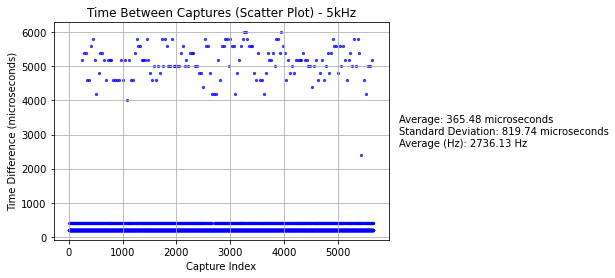

Welcome to the g-2 Modified DAQ Manual

The purpose of this manual is to aid users with setup, usage, and debugging of the g-2 modified data acquisition (DAQ) system. This DAQ's purpose is to aid with various test stands across the PIONEER collaboration. Most topics are simplified to only include information needed for operating this DAQ. Some external links are provided for additional, generalized information.
Many of the guides on this webpage are thorough, as they are aimed to give solutions to problems I've encountered. However, every system is different; there may be some additional debugging to be done on the user's end.
PDF Version
A pdf version of this manual is automatically generated using MkDocs with pdf plugin.
Contact
Manual Written by Jack Carlton.
Ph.D. Candidate, Department of Physics and Astronomy, University of Kentucky.
Email: j.carlton@uky.edu
GitHub: jaca230
Feel free to reach out with any questions, to correct mistakes, point out missing information, or otherwise. If you're familiar with mkdocs and have repository access, feel free to push your edits and credit yourself.
Last Updated: August 6, 2024
Hardware Documentation
General Hardware Overview
Conceptual Diagram (One Crate System)

- Differential signal into WFD5 (Waveform Digitizer): Differential signaling are input into Cornell's WFD5s. Data is aggregated by AMC13 on triggers.
- Trigger signal into FC7 (Flexible Controller): Provides flexible triggering, FC7 sends trigger signals over optical links to the AMC13.
- AMC13 (Advanced Mezzanine Card): Aggregates data from digitizers on a trigger and packages for sending over 10GbE (10 Gigabit Ethernet). Transfers this to the desktop for further processing.
- MCH (MicroTCA Carrier Hub): Facilitates communication between the desktop and the crate system via 1GbE Ethernet, managing system-level (crate) operations in a way.
- Desktop CPU: Processes events received from the AMC13. Data is unpacked and formed into midas events for storage.
- Meinberg: Provides precise trigger timestamps using GPS timing. This is an artifact of g-2 more than anything, were multiple disconnected systems needed to be correlated.
Labled Picture (One Crate System)

IPMI
Overview
Intelligent Platform Management Interface (IPMI) is a standardized interface used for managing and monitoring computer systems. It allows for the remote management of systems independently of the operating system state or the system's power state. IPMI provides a way to manage a server using a set of standardized commands and messages that can be sent over a network or via a direct serial connection.
Features of IPMI
- Remote Management: Allows administrators to remotely manage systems, including power on/off, rebooting, and accessing system logs.
- Hardware Monitoring: Monitors hardware components like temperature, voltage, fans, and power supply status.
- Serial Over LAN (SOL): Provides serial console access over a network, allowing remote troubleshooting and management.
- Event Logging: Logs critical system events such as hardware failures or temperature thresholds being exceeded.
- Security: Supports user authentication, encrypted communication, and access control.
Common IPMI Tools
- ipmitool: A command-line utility for managing IPMI-enabled devices. It supports a wide range of commands for sensor reading, system status checking, power control, and firmware updates. ipmitool commands are the building blocks used in many of the configuration scripts for the hardware. See ipmitool for more information.
Example Commands Using ipmitool
1 Print Field Replaceable Unit (FRU) Information:
ipmitool -H 192.168.1.15 fru print
This command retrieves and prints the Field Replaceable Unit (FRU) information from the IPMI device located at IP address 192.168.1.15.
-H 192.168.1.15: Specifies the IP address of the IPMI device. Replace192.168.1.15with the actual IP address of your IPMI device.fru print: Command to retrieve and display the FRU information. FRU information includes details about hardware components that can be replaced in the system, such as part numbers and descriptions.
2 Send Raw Command to IPMI Device:
ipmitool -I lan -H 192.168.1.15 -m 0x20 -B 0 -T 0x82 -b 7 -t 0x86 raw 0x06 0x1
This command sends a raw IPMI command to a device over LAN with specified parameters.
-I lan: Specifies the interface type (lanin this case), which indicates that the IPMI command will be sent over the LAN interface.-H 192.168.1.15: Specifies the IP address of the IPMI device.-m 0x20: Specifies the channel number to communicate with the BMC (Baseboard Management Controller). The default is usually0x20, but for some reason we need to specify this on some systems.-B 0: Specifies the BMC instance number.-T 0x82: Specifies the target address in the IPMI device. This is the MCH.-b 7: Specifies the bus number.-t 0x86: Specifies the target channel number. This is the device you're targeting, in this case it's FC7 in slot 11 of the microTCA crate.raw 0x06 0x1: Command to send a raw IPMI command (0x06 0x1in this case) to the specified IPMI device. The raw command0x06 0x1varies based on the specific IPMI command you intend to send.
You can read a bit more about these commands in the manuals linked in the MCH section. You can read more about ipmitool's command arguments on this webpage.
1GbE NIC (Gigabit Ethernet Network Interface Card)
Overview
These NICs are generally PCIe Cards that are "plug and play". They provide a 1 gigabit per second ethernet connection for the host computer.
Configuration
If you machine has a GUI, you may find it easier to edit network settings that way. Otherwise, you can edit settings from command line. For example on CentOS7:
vi /etc/sysconfig/network-scripts/ifcfg-{port name}
For example, this is how the UKY teststand 1GbE NIC is configured to communicate with multiple crate using an ethernet splitter.
#
# Connect to MCH
#
TYPE=Ethernet
BOOTPROTO=static
IPADDR=192.168.1.100
NETMASK=255.255.0.0
IPV4_FAILURE_FATAL=no
IPV6INIT=no
IPV6_AUTOCONF=yes
IPV6_DEFROUTE=yes
IPV6_PEERDNS=yes
IPV6_PEERROUTES=yes
IPV6_FAILURE_FATAL=no
NAME=enp5s0
DEVICE=enp5s0
ONBOOT=yes
In particular, the IP_ADDR and NETMASK sections are important. Here the port is specified to accept any traffic on the 192.168.xxx.xxx subnet. See the networking page for more details.
10GbE NIC (10 Gigabit Ethernet Network Interface Card)
Overview
These NICs are generally PCIe Cards that are "plug and play". They provide a 10 gigabit per second ethernet connection for the host computer. In our case, we use optical cables that plug into SFPs. The MTU (Maximum Transmission Unit) of the card should be 9000 or greater.
Configuration
If you machine has a GUI, you may find it easier to edit network settings that way. Otherwise, you can edit settings from command line. For example on CentOS7:
vi /etc/sysconfig/network-scripts/ifcfg-{port name}
For example, this is how one of the UKY teststand 10GbE NIC is configured to communicate with the AMC13.
#
# Connect to AMC13
#
TYPE=Ethernet
BOOTPROTO=static
IPADDR=192.168.51.100
NETMASK=255.255.255.0
IPV4_FAILURE_FATAL=no
IPV6INIT=no
IPV6_AUTOCONF=yes
IPV6_DEFROUTE=yes
IPV6_PEERDNS=yes
IPV6_PEERROUTES=yes
IPV6_FAILURE_FATAL=no
NAME=enp1s0f0
DEVICE=enp1s0f0
ONBOOT=yes
AUTOCONNECT_PRIORITY=-999
MTU=9000
In particular, the IP_ADDR, NETMASK, and MTU sections are important. Here the port is specified to accept any traffic on the 192.168.51.xxx subnet. See the networking page for more details.
µTCA Crate (Micro Telecommunications Computing Architecture Crate)
Overview
Micro Telecommunications Computing Architecture (µTCA or MicroTCA) is a modular, high-performance architecture designed for telecommunications and other industries requiring reliable, scalable, and high-bandwidth systems. CERN employs µTCA systems for the acquisition and processing of vast amounts of data generated by particle detectors. These systems are capable of handling high-speed data streams and ensuring data integrity and accuracy.
For our purposes, you can just view it as an electronics crate to host the MCH, FC7, and WFD5.
Configuration
The µTCA Crate should be "plug and play" in our case; no configuration is needed.
MCH (MicroTCA Carrier Hub)
Overview
For our purposes, the MCH acts as a point of communication between the crate and the computer hosting the frontends. Here, we will cover specifically setting up VadaTech MCHs, however the system can also be run using N.A.T. MCH.
Wired Connections
1GbE Ethernet Connection
The MCH should have an ethernet port labeled GbE0 or 1GbE (or something along those lines). Use an ethernet cable to connect this to your system's 1GbE NIC.
See the labeled DAQ Picture 1GbE MCH in/out.
Configuration
First you should configure the 1GbE NIC if you haven't already.
Here are some pdfs that may be be helpful:
Changing MCH Network Settings
Below is a stripped down version of MCH Network Configuration PDF; you can read the pdf for more details.
1 Connect to the MCH's Linux environment
Plug an Ethernet cable into the GbE0 port and the frontend host computer. From a terminal, run
ssh root@192.168.[crate].15
Note: If you don't know what IP the MCH has, you can try pinging a crate numbers up to 32
ping 192.168.[crate].15
The password should be root.
If you still can't find the crate, you should verify your frontend host computer's ethernet port is properly configured. See the networking page for some general networking information. If that still fails, you may need to do a network scan to look for the MCH.
2 Remount root directory with read/write permission
mount -o remount,rw /
3 Edit Network Settings
vi /etc/rc.d/rc.conf
Note: In order to insert text properly, I had to type this command into vi first :set nocompatible
Change the following to reflect your network settings
# net interface 1
export SYSCFG_IFACE1=y
export INTERFACE1="eth1"
export IPADDR1="192.168.[crate].15"
export NETMASK1="255.255.224.0"
export BROADCAST1="192.168.31.255"
export GATEWAY1={IP of server (i.e. the IP of the ethernet port on the frontend host computer)}
export NAMESERVER1="0.0.0.0"
For example
# net interface 1
export SYSCFG_IFACE1=y
export INTERFACE1="eth1"
export IPADDR1="192.168.2.15"
export NETMASK1="255.255.224.0"
export BROADCAST1="192.168.31.255"
export GATEWAY1="192.168.1.100"
export NAMESERVER1="0.0.0.0"
Note: For a one crate system, you can change NETMASK1 to 255.255.255.0 if your really want. This just means the MCH can only see IPs that start with 192.168.[crate].
Then run
carrier set_ip_connection -s 192.168.[crate].17 -c 192.168.[crate].18
carrier set_ip_connection -m 192.168.[crate].19 -M 192.168.[crate].20
4 Edit .xml settings
Edit the .xml config
vi /opt/vadatech/IPMI/UTCShelf/etc/fruUTCSH.xml
In vi you can use the command :/192 to skip to the relevant section.
<IP_Connection>
<in_band>eth0,eth1</in_band>
<failover>eth1,eth0</failover>
<IP>
<ip_address>192.168.[crate].17</ip_address>
<gw_address>192.168.1.1</gw_address>
<net_mask>255.255.255.0</net_mask>
</IP>
</IP_Connection>
Change the <ip_address>, <gw_address>, and <net_mask> to correspond with what you changed above. For example:
<IP_Connection>
<in_band>eth0,eth1</in_band>
<failover>eth1,eth0</failover>
<IP>
<ip_address>192.168.2.17</ip_address>
<gw_address>192.168.1.100</gw_address>
<net_mask>255.255.224.0</net_mask>
</IP>
</IP_Connection>
Then run
vtipmi stop
createFruRepositories
5 Power cycle the uTCA crate
The MicroTCA crate must then be power-cycled, and you must wait until all of the blue hot-swap lights have turned off.
6 Set Shelf Address
Repeat steps 1 and 2. Then run the command
set_shelf_address_info -a 192.168.[crate].17
7 Verify Settings Changes
Verify the output of all the following commands looks right.
carrier get_ip_connection
get_ip_connection
get_shelf_address_info
list_carriers_present
ifconfig
Finally, exit the ssh connection with
exit
and verify you can ping the MCH on the new assigned address
ping 192.168.[crate].15
WFD5 (Waveform Digitizer)
Overview
The WFD5 is a AMC developed by Cornell for g-2 data digitization. Our use case it the same: to digitize the data before being processed further by the frontend host computer.
Wired Connections
Pentabus Cable Input Signal
The WFD5 has a 5 channel differential signal input. Connect the differential signal to be digitized using a pentabus cable.
See the labeled DAQ Picture WFD5 5-channel differential signal in.
Configuration
First you should configure the MCH if you haven't already.
For most of the configuration below to work, you must have cactus installed and linked with python. There are WFD5 python configuration scripts located on the PIONEER github. After setting up your github account, You can clone the repository with:
git clone git@github.com:PIONEER-Experiment/wfdConfig.git
Below are a few examples of using the configuration scripts.
Reading IP Address
cd wfdConfig/software
python read_addresses.py
This will print usage help.
Changing IP Address
cd wfdConfig/software
python store_ip.py
This will print usage help.
You should set the IP to be in the format 192.168.[crate number].[slot number] for the DAQ to work properly.
You will need to power cycle (pull the black handle out and push it back in) the WFD5 to get it to take the new address.
Then verify you can ping the address
ping 192.168.[crate].[slot]
Reading Status
cd wfdConfig/software
python read_status.py
This will print usage help.
Updating Firmware
There are some instructions in the read me, you can see them on the wfdConfig github page.
You need to set the IP before doing this.
It will be easier if you install the DAQ software before doing this. In particular, you want the environment variable BOOST_ROOT declared in your shell session. Additionally, you'll want the address table located in the g-2 modified DAQ repository.
You may be able to simply make the FC7 firmware updating tool with
cd wfdConfig/software/flash
make
If so, skip to step 4 below.
1 Setup environment (if not already)
cd /path/to/gm2daq-modified/environment_setup/
source ./setup_environment.sh
cd /path/to/wfdConfig/software/flash
where you replace /path/to with the appropriate paths.
export LD_LIBRARY_PATH=$(pwd)/lib:$LD_LIBRARY_PATH
export CPLUS_INCLUDE_PATH="$BOOST_ROOT/include:$CPLUS_INCLUDE_PATH"
2 Edit makefile
Using your favorite text editor, open the makefile
vi Makefile
Add the line
-L$(BOOST_ROOT)/lib
to the makefile, the relevant section should look like this
LIBRARY_PATH = -Llib \
-L/opt/cactus/lib \
-L$(CACTUS_ROOT)/lib \
-L$(CACTUS_ROOT)/uhal/uhal/lib \
-L$(CACTUS_ROOT)/uhal/grammars/lib \
-L$(CACTUS_ROOT)/uhal/log/lib \
-L$(CACTUS_ROOT)/extern/pugixml/RPMBUILD/SOURCES/lib \
-L$(CACTUS_ROOT)/extern/boost/RPMBUILD/SOURCES/lib \
-L$(BOOST_ROOT)/lib
3 Make programFirmware executable
make
cd bin
verify programFirmware has been made.
4 Program the WFD5 See
./programFirmware
for usage. For example:
./programFirmware 1 1 /path/to/wfdConfig/releases/wfd_master_0x030101.mcs /path/to/wfdConfig/releases/wfd_channel_0x030101.mcs /path/to/wfdConfig/releases/wfd_channel_async_0x030101.mcs /path/to/wfdConfig/releases/wfd_channel_cbuf_0x030101.mcs
where you replace /path/to with the appropriate paths. This will apply firmware version 3.1.1 to the WFD5 in crate 1 slot 1. Supposedly you can use this command to program multiple WFD5s at once, though I've never tried.
FC7 (Flexible Controller)
Overview
For our use case, the FC7 can be viewed as a hub that sends out Timing, Trigger, and Control (TTC) Signals to the AMC13s. It is a much more general tool developed by CERN, you can read more about it at a surface level in this presentation. Additionally, there are some detailed schematics.
The FC7 has two slots for FMC modules. Usually, the top slot is for an SFP interface. The bottom slot is for the FMC that handles trigger and clock input.
FMCs
SFP Interface
The SFP interface is more or less "plug and play". You should familiarize yourself with the FC7 labeling. This needs to be placed in the top slot. Also this slot this is in needs to be specified in the ODB.
Trigger and Clock Input Interface
The trigger and clock input interface uses a digital I/O board. The FC7 firmware is configured to use channels 4-7 for input, and 0-3 for output; on the board there are microswitches you must toggle on the digital I/O board. For incoming signals that will expect 50 Ohm termination, you should apply a jumper shown in page 4 of the digital I/O board quick reference.
In some setups, there is also a 2nd mezzanine card that then mounts on that FMC card to route the I/O through coax ribbon cables. This connects to the bank board.
Wired Connections
Optical Link to AMC13
The FC7 sends trigger information to the AMC13s over an optical cable. This allows one FC7 to send triggers to up to 8 crates. Fill in the FC7 SFP ports with Finisar (or similar) SFP transceiver(s), one for each AMC13. Connect it to the appropriate SFP port in the AMC13.
See the labeled DAQ Picture trigger out FC7.
Samtech Ribbon cable to Bank Board
A ribbon cable is used to carry TTC signals from the FC7 to a signal bank board. The ribbon cable used is a Samtec HHSC-108-40.00-SU-SU (the 40.00 specifies the length, which need not be 40 cm). This cable runs between the trigger and clock input interface FMC and the bank board; this diagram bank board may be helpful.
See the labeled DAQ Picture FC7 trigger in.
Configuration
First you should configure the MCH if you haven't already.
For most of the configuration below to work, you must have cactus installed and linked with python. There are FC7 python configuration scripts located on the PIONEER github. After setting up your github account, You can clone the repository with:
git clone git@github.com:PIONEER-Experiment/unifiedCCC.git
Below are a few examples of using the configuration scripts.
Reading IP Address
cd unifiedCCC/software
python read_addresses.py
This will print usage help.
Changing IP Address
cd unifiedCCC/software
python3 store_ip.py
This will print usage help.
You should set the IP to be in the format 192.168.[crate number].[slot number] for the DAQ to work properly.
You may need to power cycle (pull the black handle out and push it back in) after this, I don't remember.
Then verify you can ping the address
ping 192.168.[crate].[slot]
Reading Status
cd unifiedCCC/software
python read_status.py [crate] [slot] [options]
Note: You should use the expert option for this, otherwise
Updating Firmware
You need to set the IP before doing this.
It will be easier if you install the DAQ software before doing this. In particular, you want the environment variable BOOST_ROOT declared in your shell session. Additionally, you'll want the address table located in the g-2 modified DAQ repository.
You may be able to simply make the FC7 firmware updating tool with
cd unifiedCCC/software/flash
make
If so, skip to step 4 below.
1 Setup environment (if not already)
cd /path/to/gm2daq-modified/environment_setup/
source ./setup_environment.sh
cd /path/to/unifiedCCC/software/flash
where you replace /path/to with the appropriate paths.
export LD_LIBRARY_PATH=$(pwd)/lib:$LD_LIBRARY_PATH
export CPLUS_INCLUDE_PATH="$BOOST_ROOT/include:$CPLUS_INCLUDE_PATH"
2 Edit makefile
Using your favorite text editor, open the makefile
vi Makefile
Add the line
-L$(BOOST_ROOT)/lib
to the makefile, the relevant section should look like this
LIBRARY_PATH = -Llib \
-L/opt/cactus/lib \
-L$(CACTUS_ROOT)/lib \
-L$(CACTUS_ROOT)/uhal/uhal/lib \
-L$(CACTUS_ROOT)/uhal/grammars/lib \
-L$(CACTUS_ROOT)/uhal/log/lib \
-L$(CACTUS_ROOT)/extern/pugixml/RPMBUILD/SOURCES/lib \
-L$(CACTUS_ROOT)/extern/boost/RPMBUILD/SOURCES/lib \
-L$(BOOST_ROOT)/lib
3 Make programFC7 executable
make
cd bin
verify programFC7 has been made.
4 Program the FC7 See
./programFC7
for usage. For example:
./programFC7 1 11 /path/to/unifiedCCC/releases/fc7_unified_0x080107.mcs /path/to/gm2daq-modified/address_tables/FC7_CCC.xml
where you replace /path/to with the appropriate paths. This will apply firmware version 8.1.7 to the FC7 in crate 1 slot 11.
AMC13 (Advanced Mezzanine Card)
Overview
The AMC13 is an AMC developed by Boston University for g-2 as well as experiments at CERN. For our use case, it gathers data from digitizers whenever it recieves a trigger. It then packages them and sends them to the frontend hosting computer over 10GbE. There is some general information on Boston Unviversity's TWiki page.
Wired Connections
Optical Link to FC7
The FC7 sends trigger information to the AMC13s over an optical cable. Put a Finisar (or similar) SFP transceiver in the bottom SFP port in the AMC13. Connect it to the appropriate SFP port in the FC7.
See the labeled DAQ Picture Trigger in AMC13.
10GbE Link to DAQ computer
The AMC13 sends data to DAQ computer over an optical cable. Put an Avago (or similar) SFP transceiver in the top SFP+ port in the AMC13. Connect it to the 10GbE NIC in the DAQ computer.
See the labeled DAQ Picture 10GbE out.
Configuration
First you should configure the MCH and configure the 10GbE NIC if you haven't already.
The AMC13 is largely configured with AMC13Tool2.exe.The tools to configure the AMC13 are located in the g-2 modified DAQ repository, so you'll want to install the DAQ software before doing this. For some AMC13s, you need to set the IP addresses and reconfigure using AMC13Tool2.exe every time the module is power cycled.
Reading IP Address
In your favorite text editor, edit systemVars.py
cd $GM2DAQ_DIR/amc13/amc13_v1_2_18/dev_tools/amc13Config
vi systemVars.py
Ensure DEFAULT_HOST_IP corresponds to the MCH IP for this AMC13's crate. Additionally, ensure the NETWORK_BASE is correct. This example file is provided:
#File to specify what the default varaibles addresses are used in your system
#Default IP address for commercial MCH module
# our NAT MCH address
#DEFAULT_HOST_IP="192.168.1.41"
# our Vadatech MCH address
DEFAULT_HOST_IP="192.168.2.15"
#Default AMC13 slot number
DEFAULT_AMC13_SLOT=13
#Location of 'config_tools'. This should never need to be changed
DEFAULT_CONFIG_DIR="./config_tools"
#Network base for your uTCA crate's AMC modules
#NETWORK_BASE="192.168.1"
NETWORK_BASE="192.168.2"
Then you can run
python readIPs.py
Changing IP Address
In your favorite text editor, edit systemVars.py
cd $GM2DAQ_DIR/amc13/amc13_v1_2_18/dev_tools/amc13Config
vi systemVars.py
Ensure DEFAULT_HOST_IP corresponds to the MCH IP for this AMC13's crate. Additionally, ensure the NETWORK_BASE is correct. This example file is provided:
#File to specify what the default varaibles addresses are used in your system
#Default IP address for commercial MCH module
# our NAT MCH address
#DEFAULT_HOST_IP="192.168.1.41"
# our Vadatech MCH address
DEFAULT_HOST_IP="192.168.2.15"
#Default AMC13 slot number
DEFAULT_AMC13_SLOT=13
#Location of 'config_tools'. This should never need to be changed
DEFAULT_CONFIG_DIR="./config_tools"
#Network base for your uTCA crate's AMC modules
#NETWORK_BASE="192.168.1"
NETWORK_BASE="192.168.2"
Then you can run
python applyConfig.py -i 192.168.[crate].13
This will set the T1 (virtex FPGA) IP to 192.168.[crate].13 and the T2 (spartan FPGA) IP to 192.168.[crate].14.
Then verify you can ping the addresses
ping 192.168.[crate].13
ping 192.168.[crate].14
Building AMC13Tool2.exe
You need to set the IP before doing this.
1 Set up environment
You may need to find where you python includes are
python-config --includes
make note of the directory (without the -I). And add it to your C++ include path, for example:
export CPLUS_INCLUDE_PATH=$CPLUS_INCLUDE_PATH:/opt/rh/rh-python36/root/usr/include/python3.6m
Then add library paths
export LD_LIBRARY_PATH=$GM2DAQ_DIR/amc13/amc13_v1_2_18/amc13/lib/:$LD_LIBRARY_PATH
export LD_LIBRARY_PATH=$GM2DAQ_DIR/amc13/amc13_v1_2_18/tools/lib:$LD_LIBRARY_PATH
2 Make AMC13Tool2.exe
cd $GM2DAQ_DIR/amc13/amc13_v1_2_18/tools
make
Note: I had trouble building AMC13Tool2.exe at first. I had to make some edits to the C++ code to get it to compile; those edits should be included in the multi-crate branch of the DAQ repository.
3 Run AMC13Tool2.exe
Try running AMC13Tool2.exe
bin/AMC13Tool2.exe -c 192.168.[crate #].13 -p $GM2DAQ_DIR/address_tables/
Enter h for available commands.
Configuring the AMC13 with AMC13Tool2.exe
AMC13Tool2.exe has a command guide provided by Boston Unversity. For our case we just want to run the following:
1 Run AMC13Tool2.exe
cd $GM2DAQ_DIR/amc13/amc13_v1_2_18/tools
bin/AMC13Tool2.exe -c 192.168.[crate #].13 -p $GM2DAQ_DIR/address_tables/
2 Initialize AMC13 for data taking
en 1-12
3 Enable SFPs
daq 1
4 Change IP of 10GbE Port First read the value and make note:
rv 0x1c1c
Then write the value to an IP on your 10GbE port network, for example:
wv 0x1c1c 0xc0a83301
where the hex converts to IP as such:
c0 = 192
a8 = 168
33 = 51
01 = 1
So This sets the IP to 192.168.51.1. You want to set this value in the ODB to correspond to this IP.
5 Issue DAQ reset
rd
6 Verify you can ping the 10GbE link For example:
ping 192.168.51.1
Note: Sometimes this doesn't work for me. You can also try running the commands inside the AMC13Tool2.exe CLI this order instead:
en 1-12
daq 1
rd
wv 0x1c1c 0xc0a83301
Updating Firmware
See Boston University's firmware guide for more details.+
1 Download Firmware See the download page for various firmware versions. We want T1 (virtex) version 33087 (0x813f) and T2 (spartan) version 46 (0x2e). You can download them using wget:
cd $GM2DAQ_DIR/amc13/amc13_v1_2_18/tools
wget http://ohm.bu.edu/~amc13/CMS/AMC13-Firmware/AMC13T2v0x002e_6slx45t.mcs
wget http://ohm.bu.edu/~amc13/CMS/AMC13-Firmware/AMC13T1v0x813f_7k325t.mcs
2 Update Firmware
bin/AMC13Tool2.exe -c 192.168.[crate #].13 -p $GM2DAQ_DIR/address_tables/
In the CLI:
pv
Select the correct firmware from the options listed. Then repeat for the spartan
ps
3 Verify Firmware Version is Correct
You can verify the firmware updated correctly with
list
example output:
Connected AMC13s
*0: SN: 268 T1v: 813f T2v: 002e cf: 192.168.1.13
Meinberg Card (TCR180PEX or similar)
Overview
The Meinberg card provides GPS timestamps for data triggers. It is an artifact from g-2 that doesn't serve much purpose for the g-2 modified DAQ. However, it is still a supported trigger system for the Master Frontend.
Wired Connections
SMA to D9 Connector
A custom cable must be created to connect the meinberg to the signal bank. One end needs to end up as SMA (for the bank) while the other needs to be a 9pin D-SUB connector (for the meinberg). There is pinout in section 10 (page 27) of the meinberg manual.
Configuration
See the Meinberg manual for detailed configuration. Furthermore, there are meinberg command line tools detailed on their website. After the meinberg drivers are installed and loaded, there should be no additional configuration to be done.
Software Dependencies
PIONEER Experiment Repositories
Access the repositories here: PIONEER Experiment GitHub.
Contact for Access
Patrick Schwendimann:
Email: schwenpa@uw.edu
GitHub: PatrickSchwendimann
Joshua Labounty:
Email: jjlab@uw.edu
GitHub: jlabounty
Setting Up a GitHub SSH Token on RHEL7/9 Systems
1. Generate an SSH Key Pair
- Open your terminal.
-
Generate a new SSH key. Replace
your_email@example.comwith the email address associated with your GitHub account.ssh-keygen -t ed25519 -C "your_email@example.com"If you are using an older system that doesn’t support the
ed25519algorithm, you can usersainstead:ssh-keygen -t rsa -b 4096 -C "your_email@example.com" -
Follow the prompts to save the key in the default location (
~/.ssh/id_ed25519) and set a passphrase.
2. Add the SSH Key to the SSH-Agent
-
Start the SSH agent in the background:
eval "$(ssh-agent -s)" -
Add your SSH private key to the ssh-agent. Replace
id_ed25519with the name of your private key file if you used a different name.ssh-add ~/.ssh/id_ed25519
3. Add the SSH Key to Your GitHub Account
-
Copy the SSH key to your clipboard:
cat ~/.ssh/id_ed25519.pubThis will display for the key. Copy all of it. -
Log in to your GitHub account and navigate to Settings > SSH and GPG keys > New SSH key.
- Paste your SSH key into the "Key" field and add a descriptive title.
- Click "Add SSH key".
4. Test Your SSH Connection
-
Test the connection to make sure everything is set up correctly:
ssh -T git@github.com -
You should see a message like:
Hi username! You've successfully authenticated, but GitHub does not provide shell access.Example Steps in Terminal
# Step 1: Generate an SSH Key Pair
ssh-keygen -t ed25519 -C "your_email@example.com"
# Step 2: Start the SSH agent in the background
eval "$(ssh-agent -s)"
# Step 3: Add your SSH private key to the ssh-agent
ssh-add ~/.ssh/id_ed25519
# Step 4: Copy the SSH key to your clipboard
cat ~/.ssh/id_ed25519.pub
# Step 5: Add the SSH key to GitHub via the GitHub web interface
# Step 6: Test your SSH connection
ssh -T git@github.com
Development Tools
Overview
These tools include compilers, libraries, and other utilities that facilitate software development and installation.
Installation Guide
This guide should work for RHEL systems (CentOS7 and ALMA9 included), though you may need to install yum on ALMA9.
1 Install yum package manager
sudo dnf install yum
2 Update the package index:
sudo yum update
3 Enable the EPEL repository:
sudo yum install epel-release
4 Install Development Tools and Dependencies:
sudo yum groupinstall "Development Tools"
sudo yum install cmake gcc-c++ gcc binutils libX11-devel libXpm-devel libXft-devel libXext-devel
5 Install Python
sudo yum install python3
Note: CentOS7 may not have python3 available in base repositories, you can install via yum install -y rh-python36.
ipmitool
Overview
ipmitool is a widely used command-line utility that facilitates interaction with IPMI-enabled devices. It allows administrators to perform various management tasks remotely and locally. Here's a more detailed look at ipmitool:
- Sensor Monitoring:
ipmitoolcan read and display sensor data, such as temperature, voltage, and fan speed, helping to monitor the health and status of the hardware. - System Management: It provides commands to control system power states (on, off, reset) and to manage system settings remotely.
- Firmware Management:
ipmitoolsupports updating and managing firmware of the IPMI-enabled devices. - Event Log Management: It can display and clear the system event log (SEL), which records critical system events.
- Chassis Management: Commands to control and manage the chassis, including power control and identifying LEDs.
- User Management: Supports adding, modifying, and deleting IPMI users.
Installation Guide
1 Install ipmitool:
sudo yum install ipmitool
2 Verify Installation:
ipmitool -V
ROOT
Overview
ROOT is an open-source data analysis framework developed by CERN. It is widely used in high-energy physics for data processing, statistical analysis, visualization, and storage. It is needed for some features of Midas.
Installation Guide
General installaiton guides are provided by ROOT at their Installing ROOT and Building ROOT from source pages.
AlmaLinux 9
1 Enable the EPEL repository:
sudo yum install epel-release
2 Download and Install ROOT:
wget https://root.cern/download/root_v6.32.02.Linux-almalinux9.4-x86_64-gcc11.4.tar.gz
tar -xzvf root_v6.32.02.Linux-almalinux9.4-x86_64-gcc11.4.tar.gz
cd root
source bin/thisroot.sh
CentOS 7
1 Enable the EPEL repository:
sudo yum install epel-release
2 Download and Install ROOT:
yum install root
Building from source (Linux)
1 Example building latest stable branch from source
git clone --branch latest-stable --depth=1 https://github.com/root-project/root.git root_src
mkdir root_build root_install && cd root_build
cmake -DCMAKE_INSTALL_PREFIX=../root_install ../root_src # && check cmake configuration output for warnings or errors
cmake --build . -- install -j4 # if you have 4 cores available for compilation
source ../root_install/bin/thisroot.sh # or thisroot.{fish,csh}
Note: Adjust the ROOT version and the download URL as needed. Always check for the latest version on the official ROOT website. Furthermore, if you are not building from source you are installing precompiled binaries, which may not be up to date versions of ROOT. For specific versions, you may need to build root from source.
Midas
Overview
Midas is a data acquisition system used in high-energy physics experiments. Midas provides the following functionalities:
- Run control
- Experiment configuration
- Data readout
- Event building
- Data storage
- Slow control
- Alarm systems
- ... much more ...
Installation Guide
For a general Midas installation, you can follow this Linux Quick Start Guide. For the g-2 modified DAQ, we use a custom version of midas, which can be cloned and installed as follows:
1 Set experiment name environment variable
export MIDAS_EXPT_NAME=DAQ
2 Create exptab file
mkdir online
cd online
touch exptab
echo "$MIDAS_EXPT_NAME $(pwd) system" >> exptab
export MIDAS_EXPTAB=$(pwd)/exptab
3 Install Midas
cd ..
mkdir packages
git clone --recursive git@github.com:PIONEER-Experiment/midas-modified.git midas
cd midas
mkdir build
cd build
cmake ..
make -j$(nproc) install
cd ..
Note: On CentOS7 you may need to use cmake3 as opposed to cmake; install with sudo yum install cmake3. Alternatively, you can install cmake from source to ensure it is up to date.
4 Set MIDASSYS environment variable and add to path
export MIDASSYS=$(pwd)
export PATH=$PATH:$MIDASSYS/bin
Note: you can hardcode the environment variables MIDASSYS (and add to path), MIDAS_EXPTAB, and MIDAS_EXPT_NAME by adding the appropriate commands to your .bashrc file. This way, the environment variables are set with each new terminal session for that user.
Boost
Overview
Boost is a comprehensive collection of C++ libraries that provide support for various tasks and structures including linear algebra, multithreading, image processing, regex (regular expressions), and more.
Installation Guide
Boost can be installed on CentOS 7 and AlmaLinux 9 using package managers or from source. Here are detailed instructions for each method:
CentOS 7 and AlmaLinux 9
1 Install Development Tools and Dependencies:
sudo yum groupinstall "Development Tools"
sudo yum install cmake
2 Install Boost Libraries:
sudo yum install epel-release
sudo yum install boost-devel
Install Boost 1.76 from Source
1 Download and Extract Boost:
wget https://sourceforge.net/projects/boost/files/boost/1.76.0/boost_1_76_0.tar.gz
tar -xzf boost_1_76_0.tar.gz
cd boost_1_76_0
2 Configure and Build Boost:
./bootstrap.sh --prefix=/usr/local
./b2
Replace /usr/local with your desired installation path.
Note: You may need to manually link python to boost, to do this:
export CPLUS_INCLUDE_PATH=$CPLUS_INCLUDE_PATH:/opt/rh/rh-python36/root/usr/include/python3.6m
./bootstrap.sh --prefix=/usr/local --with-python="/opt/rh/rh-python36/root/usr/bin/python3" --with-python-root="/opt/rh/rh-python36/root" --with-python-version="3.6"
where /opt/rh/rh-python36/root/usr/include/python3.6m, /opt/rh/rh-python36/root/usr/bin/python3, /opt/rh/rh-python36/root, and 3.6 are replaced with the appropriate values for your system.
3 Install Boost:
./b2 -j$(nproc) install --prefix=/usr/local
Replace /usr/local with your desired installation path.
4 Verify Boost Installation:
sudo ldconfig
IPBus (Cactus)
Overview
IPBus, part of the Cactus framework, is a protocol for remote control and monitoring of hardware devices over Ethernet. It's commonly used in high-energy DAQ systems.
Installation Guide
For a general installation guide, see ipbus' Installing the Software page.
AlmaLinux 9
1 Remove previous version (if applicable):
sudo yum groupremove uhal
2 Download yum repo file:
sudo curl https://ipbus.web.cern.ch/doc/user/html/_downloads/ipbus-sw.el9.repo -o /etc/yum.repos.d/ipbus-sw.repo
3 Install uHAL:
sudo yum clean all
sudo yum groupinstall uhal
CentOS 7
1 Remove previous version (if applicable):
sudo yum groupremove uhal
2 Download yum repo file:
sudo curl https://ipbus.web.cern.ch/doc/user/html/_downloads/ipbus-sw.centos7.repo -o /etc/yum.repos.d/ipbus-sw.repo
3 Install uHAL:
sudo yum clean all
sudo yum groupinstall uhal
Note: I personally had trouble getting this to work on CentOS7 and had to resort to building from source (see below).
Example building from source
See Compiling and installing from source, an example is below:
sudo yum install pugixml-devel
git clone --depth=1 -b v2.7.3 --recurse-submodules https://github.com/ipbus/ipbus-software.git
cd ipbus-software
make -j$(nproc) EXTERN_BOOST_INCLUDE_PREFIX="/opt/boost/include" EXTERN_BOOST_LIB_PREFIX="/opt/boost/lib" EXTERN_PUGIXML_INCLUDE_PREFIX="/usr/local/include" EXTERN_PUGIXML_LIB_PREFIX="/usr/local/lib64/"
sudo make install -j$(nproc)
Note: You may not need to specify EXTERN_BOOST_INCLUDE_PREFIX, EXTERN_BOOST_LIB_PREFIX, EXTERN_PUGIXML_INCLUDE_PREFIX, EXTERN_PUGIXML_LIB_PREFIX. Otherwise, you may need to find where pugixml and boost were installed and replace the paths above respectively.
System Monitor
Overview
The system monitor software is a custom software package used to attach system resource usage to midas data banks to aid in debugging rate slowdowns. It is a required dependency currently. It's contents can be found in the midas databank SI00 where 00 is replaced with the frontend index.
Installation Guide
See the github page for more details.
1 Clone the repository
git clone https://github.com/jaca230/system_diagnostics.git
cd system_diagnostics
2 Build the library
cd scripts
./build.sh
3 Verify installation
cd ..
cd bin
./system_diagnostics --help
./system_diagnostics
Meinberg
Overview
Meinberg provides a range of synchronization solutions, including Network Time Protocol (NTP) servers, precision time protocol (PTP) solutions, and GPS radio clocks. These tools are essential for accurate time synchronization in various high-precision applications.
In our case, we use it to apply a GPS timestamp to each event. In reality, this is an artifact from g-2 where seperate systems needed to be time correlated. Only the "GPS" master trigger mode needs the meinberg.
Installation Guide
For more general information about Meinberg devices, see Meinberg's Installing the Software page.
AlmaLinux 9 and CentOS 7
1 Clone the repository:
git clone https://git.meinbergglobal.com/drivers/mbgtools-lx.git
cd mbgtools-lx
git pull
Note: Ensure that the URLs and repository paths are correct.
2 Compile the source code:
make clean
make
Note: You may need to use a development kernel. This command will install the development kernel for your current kernel version.
sudo yum install kernel-devel-$(uname -r) gcc make
3 Install the software:
sudo make install
sudo /sbin/modprobe mbgclock
make install_svc
4 Verify installation
mbgstatus
The output of this command should look similar to this:
mbgstatus v4.2.24 copyright Meinberg 2001-2023
TCR180PEX 039212025430 (FW 1.21, ASIC 9.00) at port 0xE000, irq 47
Date/time: Tu, 2024-01-30 04:36:10.33 UTC
Signal: 0% (IRIG B122/B123, ** UTC offs not configured **)
Status info: *** NO INPUT SIGNAL
Status info: *** Ref. Time is Invalid
Last sync: We, 2023-10-04 11:36:55.00 UTC
** Warning: The IRIG receiver has not yet been configured!
Please make sure the correct IRIG Code Format has been
selected, and enter the correct IRIG Time Offset from UTC
according to the settings of the IRIG generator.
The command "mbgirigcfg" can be used to change the settings.
Note: Check the README in mbgtools-lx which provides step by step debugging for this installation.
Installing and Running g-2 modified DAQ
Overview
The g-2 modified DAQ software repurposes the DAQ software used for g-2 to be slightly more flexible. It allows for readout and communication with hardware described in the Hardware Overview page.
Software Diagram
 Note: Not pictured are the hardware links, see Hardware Diagram
Note: Not pictured are the hardware links, see Hardware Diagram
MasterGM2
This is a C++ executable midas frontend whose job is to count triggers to check that crate hardware and CaloReadoutAMC13 frontends are not missing triggers.
- Trigger Thread: Recieves processed triggers from a source (ex. Meinberg PCIe Card) and reports them to the Midas thread.
- Midas Thread: Puts data recieved from trigger thread into a midas bank for each event
CaloReadoutAMC13
This is a C++ executable midas frontend whose job is to recieve digitized data from the AMC13 and process it before being placed in midas data banks.
- TCP Thread: Recieves TCP packets over 10GbE from an AMC13. Unpacks the data into header, trailer, and payload information.
- "GPU" Thread: Recieves processed data from TCP thread. In g-2, GPUs were used for additional data processing. They have been turned off and the "GPU" thread is a legacy buffer for the data to go through. No processing is done on the data here.
- Midas Thread: Puts data recieved from gpu thread into midas banks for each event
Event Builder
This is a C++ executable midas frontend whose job is to collect data sitting in the midas buffers of all the frontends (MasterGM2, CaloReadoutAMC13 #1, CaloReadoutAMC13 #2, ...) and combine them into one midas event before being logged to a data file.
Installer
There is an installer for the g-2 modified DAQ. Though, it is currently out of date and I would not recommend using it.
Manual Installation Guide
1 Install Software Dependencies
ROOT, Midas, Boost, ipmitool, and Cactus, and the System Monitor are all required to build and run the DAQ frontends. Meinberg is needed if using GPS mode for the master triggers. Install them following the instructions on the Software Dependencies Page.
2 Clone the Appropriate Branch
Make sure you have access to the PIONEER Experiment GitHub. See these contacts for gaining access. Additionally, make sure your github account is linked to your system via SSH token; you can do this by following these instructions. After installing the software dependencies, you should have a packages directory, where it's best to put the software. To clone, follow the commands below:
cd /path/to/packages
mkdir experiment
cd experiment
git clone --branch multi-crate https://github.com/PIONEER-Experiment/gm2daq-modified.git
cd gm2daq-modified
git checkout multi-crate
Note: To clone a different branch, simply change the --branch parameter from multi-crate to the appropriate branch. You can also checkout a different branch after this is done.
3 Setup Environment
cd environment_setup
./detect_environment.sh
This will populate a local file environment_variables.txt, check it with:
cat environment_variables.txt
Here's an example of what environment_variables.txt will look like
GM2DAQ_DIR=/home/installation_testing/packages/experiment/lxedaq
CACTUS_ROOT=/home/installation_testing/packages/cactus
BOOST_ROOT=/home/backup_installation_testing/packages/boost-1.53.0
PUGIXML_ROOT=/home/installation_testing/packages/pugixml-1.8
ROOT_ROOT=/usr/include/root
SYSTEM_MONITOR_ROOT=/home/installation_testing/packages/system_diagnostics
MIDASSYS=/home/installation_testing/packages/midas
MIDAS_EXPTAB=/home/installation_testing/online/exptab
MIDAS_EXPT_NAME=DAQ
Verify that each environment variable above points to the correct path for each piece of software. If not, manually change it with your favorite text editor. Then, run
source ./setup_environment.sh
Note: To set up the environment every time you log in automatically, source this script in your .bashrc file. Modify the path in the following command to add setup_environment.sh to the .bashrc file
echo "source /path/to/gm2daq-modified/environment_setup/setup_environment.sh" >> ~/.bashrc
4 Make Frontends
Make the master frontend:
cd $GM2DAQ_DIR/frontends/MasterGM2
make clean
make -j$(nproc)
Make the AMC13 readout frontend:
cd $GM2DAQ_DIR/frontends/CaloReadoutAMC13
make clean
make -j$(nproc)
Make the event builder frontend:
cd $GM2DAQ_DIR/eventbuilder
make clean
make
5 Configure Crate Contents File
Edit AMC13xx_config.xml file in your favorite text edit, for instance:
vi $GM2DAQ_DIR/frontends/AMC13xx_config.xml
An example file for a one crate system looks like this:
<!-- The purpose of this file is to specify what devices are in each frontend crate -->
<!-- To declare frontend AMC13xx create root node <frontend id="xx"> -->
<!-- (xx = "0" will automatically be written as "00" in ODB settings, i.e. single digits are okay) -->
<!-- To declare device in slot 'y' of create, create node <slot id="y" type="device_type" -->
<!-- Select "device_type" from FC7, WFD, or Rider (WFD and Rider are the same device) -->
<?xml version="1.0" encoding="UTF-8"?>
<frontend id="1">
<slot id="1" type="WFD" />
<slot id="2" type="WFD" />
<slot id="3" type="WFD" />
<slot id="4" type="WFD" />
<slot id="5" type="WFD" />
<slot id="6" type="WFD" />
<slot id="7" type="WFD" />
<slot id="10" type="FC7" />
<slot id="11" type="WFD" />
</frontend>
An example file for a two crate system looks this like:
<?xml version="1.0" encoding="UTF-8"?>
<frontend id="1">
<slot id="1" type="WFD" />
<slot id="2" type="WFD" />
<slot id="3" type="WFD" />
<slot id="4" type="WFD" />
<slot id="5" type="WFD" />
<slot id="6" type="WFD" />
<slot id="7" type="WFD" />
<slot id="10" type="FC7" />
<slot id="11" type="WFD" />
</frontend>
<frontend id="2">
<slot id="3" type="WFD" />
<slot id="5" type="WFD" />
</frontend>
Note: The frontend id should correspond to the subnet you placed (or will place) the crate components on when configuring the hardware.
This file is used to build the ODB. Any hardware not specified in this file will be ignored. You can still disable any hardware listed in this file in the ODB after it has been generated. However if you want to move the FC7 to a different slot, this file and the ODB need to be editted accordingly.
6 Start Midas Webpage
cd $GM2DAQ_DIR/webpage_scripts
./start_midas_webpage
Then open localhost:8080 in your favorite web browser.
Note: If this doesn't work, verify that mlogger, mhttpd (or mhttpd6), and mserver and all running as screens, i.e. check:
screen -ls
You can also run mhttpd manually to look for error messages for debugging:
$MIDASSYS/bin/mhttpd
7 Generate the ODB
The first time the frontends are run, they will automatically populate the ODB with the default settings. Run the frontends for the first time (they will error out):
cd $GM2DAQ_DIR/frontends/MasterGM2
./frontend -e DAQ
cd $GM2DAQ_DIR/frontends/CaloReadoutAMC13
./frontend -e DAQ -i {frontend id}
where {frontend id} is replaced with the frontend ids specified in the crate configuration file above. This command needs to be run once for each frontend (each crate) to properly generate the ODB.
On the midas webpage view the ODB. Verify that /Equipment/MasterGM2 and each /Equipment/AMC13xxx now exist.
8 Configure the ODB
Before the DAQ can run, the ODB needs to be properly configured. First, make sure the Logger writes data and makes ODB backup files for each run. Then following the instructions on the ODB configuration page, read through each setting and ensure they are correct for your setup.
Running the Frontends
Starting Frontends "by Hand"
The first time you run the frontends, I suggest dedicating one terminal window to each so you can inspect for errors. Each frontend will occupy a terminal window.
Master Frontend
The Master frontend must be started first because it does some general AMC13 and FC7 initilization. Run
cd $GM2DAQ_DIR/frontends/MasterGM2
./frontend -e DAQ
The -e flag specifies the experiment name. This is found in the file located at $MIDAS_EXPTAB.
Wait until this frontend prints OK (or until it turns and stays green on the midas status webpage).
AMC13 Readout Frontends
This frontend(s) must be started after the Master frontend has initialized. You can start multiple instances at the same time, but in my experience this causes midas to complain about ODB space (you may be able to get around this by increasing the ODB size, I've never tried).
cd $GM2DAQ_DIR/frontends/CaloReadoutAMC13
./frontend -e DAQ -i {frontend id}
The -e flag specifies the experiment name. This is found in the file located at $MIDAS_EXPTAB.
The -i flag specifies frontend index. {frontend id} is replaced with the frontend ids specified in the crate configuration file above.
This command needs to be run once for each AMC13 frontend (each crate).
Wait until this frontend prints OK (or until it turns and stays green on the midas status webpage).
Event Builder Frontend
Once all of the other frontends have finished initializing, you can start the event builder.
./mevb -e DAQ -b BUF
The -e flag specifies the experiment name. This is found in the file located at $MIDAS_EXPTAB.
The -b flag specifies the buffer it will look for to create events. Any frontend writing to a buffer starting with BUF will added to an event by the event builder. You can check each frontend's buffer in it's Common page in the ODB, see changing buffer for a frontend.
Wait until this frontend turns green on the status page.
Screening the Frontends
Screening the frontends is slightly convoluted because you have to stuff all the appropriate environment variables into the screen session. If you are unfamiliar with screens, you may want view some learning material for using screens. You made need to make an edit to your .screenrc for this to work properly. Other than this, there are scripts provided to launch the frontends in a screen.
Master Frontend
The Master frontend must be started first because it does some general AMC13 and FC7 initilization. Run
$GM2DAQ_DIR/frontends/MasterGM2/start-fe-uky.sh DAQ master
The first argument is the experiment name which should be the value of $MIDAS_EXPT_NAME.
The second argument is the name for the screen session.
Wait until this frontend prints OK (or until it turns and stays green on the midas status webpage).
AMC13 Readout Frontends
This frontend(s) must be started after the Master frontend has initialized. You can start multiple instances at the same time, but in my experience this causes midas to complain about ODB space (you may be able to get around this by increasing the ODB size, I've never tried).
$GM2DAQ_DIR/frontends/CaloReadoutAMC13/start-fe-uw.sh 1 DAQ amc13001
The 1st argument is the frontend index, it should match the -i argument when starting this frontend by hand.
The 2nd argument is the experiment name. This is found in the file located at $MIDAS_EXPTAB.
The 3rd is the name for the screen session.
This command needs to be run once for each AMC13 frontend (each crate).
Wait until this frontend prints OK (or until it turns and stays green on the midas status webpage).
Event Builder Frontend
Once all of the other frontends have finished initializing, you can start the event builder. There is no script for this screen, just a simple screen command. The flags are the same as when starting this frontend by hand.
screen -dmS event_builder $GM2DAQ_DIR/eventbuilder/mevb -e DAQ -b BUF
Startup Scripts on Midas Programs Page
See the adding program startup scripts page to see how to add startup programs. Make Programs/{Frontend Name}/Required is set to yes. Then copy the screen command for each respective frontend into Programs/{Frontend Name}/Start Command.
Midas Online Data Base (ODB) Configuration
ODB basics
Below are some basic usage examples of midas' ODB
Accessing the ODB
Command line interface
You can edit the ODB via command line without needing a midas webserver running.
$MIDASSYS/bin/odbedit
Then you can navigate through the ODB as you would with linux directory commands. From here, you can type "help" or view the odbedit command list for a list of commands.
Via Midas Webpage
You can start a midas webpage by running mhttpd (or mhttpd6)
$MIDASSYS/bin/mhttpd
Then view the ODB by clicking the ODB button on the left sidebar
General ODB Configuration Examples
For a general guide on how to use Midas' ODB, see the ODB Access and Use wiki page. Below are a few of common ODB
Toggle Logger Data Writing
| Field | Description |
|---|---|
| Path | /Logger/Write Data |
| Description | Whether or not the Logger will write data |
| Valid Values | yes or no |
| Suggested Value | yes |
Change Logger Data Writing Directory
| Field | Description |
|---|---|
| Path | /Logger/Data dir |
| Description | What directory the logger will write data to |
| Valid Values | any valid path |
| Suggested Value | /path/to/your/online/directory |
Note: Change /path/to/your/online/directory to whatever directory you want to write data to
Change Data Buffer Logger Writes to File
| Field | Description |
|---|---|
| Path | /Logger/Channels/0/Settings/Buffer |
| Description | What directory the logger will write data to |
| Valid Values | any valid buffer name (ex. SYSTEM, BUF001, ...) |
| Suggested Value | SYSTEM |
Toggle Logger to generate ODB backups for each run
| Field | Description |
|---|---|
| Path | /Logger/ODB Dump |
| Description | Whether or not backups of the ODB will be generated after each run |
| Valid Values | yes or no |
| Suggested Value | yes |
Change Webpage Port
| Field | Description |
|---|---|
| Path | /WebServer/localhost port |
| Description | What port the webserver will run on |
| Valid Values | 0000 to 9999 |
| Suggested Value | 8080 |
Note: To generate this ODB path, run mhttpd or mhttpd6 at least once. It doesn't need to be successful, it just needs to generate the WebServer ODB directory.
Disable a Frontend
| Field | Description |
|---|---|
| Path | /Equipment/{Frontend Name}/Common/Enabled |
| Description | Whether a frontend is enabled for use or not |
| Valid Values | yes or no |
| Suggested Value | yes |
Note: Every Midas frontend generates a Common section it's ODB. For example, Equipment/AMC13001/Common will be generated. This is useful for toggling off crates in multicrate setups.
Change the Data Buffer for a Frontend
| Field | Description |
|---|---|
| Path | /Equipment/{Frontend Name}/Common/Buffer |
| Description | What midas buffer the frontend will write to |
| Valid Values | any valid string |
| Suggested Value | BUF{3 digit frontend #} |
Note: The event builder assumes every buffer for events starts with BUF. So it's best to name frontends BUF followed by their 3 digit frontend number. For example, for AMC13001 frontend, BUF001 is a good name.
Changing Run Number
| Field | Description |
|---|---|
| Path | /Runinfo/Run number |
| Description | The run the number for the experiment |
| Valid Values | any valid integer |
| Suggested Value | 1 |
Note: If one decreases the run number, the logger will overwrite that run's data if a run is performed with the old run number again. For this reason, when loading and old ODB save you will want to increase the run number to a value larger than your last successful run number before taking data.
g-2 Modified DAQ Specific ODB Configuration
Below are some important settings in the ODB for the g-2 modified DAQ. This is not a complete description of every setting in the ODB. Many settings are artifacts from g-2 that don't serve any purpose anymore.
Master Frontend ODB settings
Trigger Source
| Field | Description |
|---|---|
| Path | /Equipment/MasterGM2/Settings/Globals/Trigger Source |
| Description | Determines what source the Master will use to trigger events |
| Valid Values | GPS, PP (currently broken), Fake, Socket (untested), None, ODB, and FC7 |
| Suggested Value | FC7 |
Note: The meaning of each value is specified below:
-
GPS: Uses the Meinberg GPS timestamps for Master triggers.
-
PP: Uses parallel port signals as the trigger source (currently broken).
-
Fake: Uses a fake signal for testing purposes. Further configuration in ODB.
-
Socket: Uses a socket connection as the trigger source (untested).
-
None: No trigger source is used, no master triggers are made.
-
ODB: Reads ODB to send triggers at a rate similar to the rate the AMC13 receives triggers.
-
FC7: Uses FC7's trigger counter over IPMI to trigger events
Front End Offset
| Field | Description |
|---|---|
| Path | /Equipment/MasterGM2/Settings/Globals/Front End Offset |
| Description | Offset for index for the IPs of the first frontend. For example if your MCH IP is 192.168.3.15, then you'd want this offset to be 3. |
| Valid Values | Positive integer < 1000 |
| Suggested Value | 1 |
Encoder Front End
| Field | Description |
|---|---|
| Path | /Equipment/MasterGM2/Settings/Globals/Encoder Front End |
| Description | Identifier for frontend that corresponds to the crate containing the encoder FC7 |
| Valid Values | AMC13001, AMC13002, ... |
| Suggested Value | AMC13001 |
AMC13 Readout Frontend ODB settings
Any setting not mentioned is either an artifact of g-2 (doesn't do anything) or shouldn't need to be modified from its default value. For example, most of the TQ01, TQ02, TQ03, and TQ04 no longer function.
Send to Event Builder
| Field | Description |
|---|---|
| Path | /Equipment/AMC13{frontend #}/Settings/Globals/Send to Event Builder |
| Description | Defines whether or not data is sent to event builder frontend |
| Valid Values | yes or no |
| Suggested Value | yes |
Note: It is best to have this set to yes as it won't affect data readout even if the event buidler isn't used.
MCH IP Address
| Field | Description |
|---|---|
| Path | /Equipment/AMC13{frontend #}/Settings/Globals/MCH IP Address |
| Description | Set to MCH IP address for the MCH in this crate |
| Valid Values | Any valid IP address |
| Suggested Value | 192.168.1.15 |
Note: This is the address in which the frontends sent IPMI commands to. If this is incorrect none of the crate components can be properly intialized for a data run. Each frontend (crate) should have it's own MCH IP address.
CCC: FC7 Slot Number (1-12)
| Field | Description |
|---|---|
| Path | /Equipment/AMC13{frontend #}/Settings/Globals/CCC: FC7 Slot Number (1-12) |
| Description | Slot number of the encoder FC7 in the uTCA crate |
| Valid Values | 1, 2, ... 12 |
| Suggested Value | 10 |
Note: For crates without an FC7, this value does not matter. Just set it to the same value as the crate with the encoder FC7.
CCC: FMC Location (top,bottom)
| Field | Description |
|---|---|
| Path | /Equipment/AMC13{frontend #}/Settings/Globals/CCC: FMC Location (top,bottom) |
| Description | The location of the SFP interface FMC card on the FC7 board |
| Valid Values | top or bottom |
| Suggested Value | top |
Note: See FC7 Labeling to decide whether your FMC SFP interface is on the top or the bottom (the FC7 firmware requires the SFP interface FMC is in the top slot).
CCC: FMC SFP Number (1-8)
| Field | Description |
|---|---|
| Path | /Equipment/AMC13{frontend #}/Settings/Globals/CCC: FMC SFP Number (1-8) |
| Description | The FC7 SFP slot number this AMC13 is connected to by optical cable |
| Valid Values | 1, 2, ... 8 |
| Suggested Value | 1 (for the first crate) |
Note: See FC7 Labeling to decide which port your optical connection is.
AMC13 10GbE Link Enable
| Field | Description |
|---|---|
| Path | /Equipment/AMC13{frontend #}/Settings/Link01/Enabled |
| Description | Toggles the 10GbE link for this AMC13 |
| Valid Values | 0 or 1 |
| Suggested Value | 1 |
AMC13 SFP IP Address
| Field | Description |
|---|---|
| Path | /Equipment/AMC13{frontend #}/Settings/Link01/AMC13 SFP IP Address |
| Description | Specifies the 10GbE link IP |
| Valid Values | Any valid IP |
| Suggested Value | 192.168.50.1 |
Note: This is the AMC13 IP that data is sent over. If this is incorrect, not data will be transferred from the crate. Each frontend (crate) should have a different AMC13 SFP IP address.
AMC13 SFP Port Number
| Field | Description |
|---|---|
| Path | /Equipment/AMC13{frontend #}/Settings/Link01/AMC13 SFP Port Number |
| Description | Specifies which SFP port on the AMC13 is used for the 10GbE link |
| Valid Values | 0x00001234, unsure about others |
| Suggested Value | 0x00001234 |
Note: 0x00001234 corresponds to the top port on the AMC13. I would not change this value unless you know what you're doing.
AMC13 T1 Firmware Version Required
| Field | Description |
|---|---|
| Path | /Equipment/AMC13{frontend #}/Settings/AMC13/AMC13 T1 Firmware Version Required |
| Description | The minimum required firmware version for the virtex (T1) FPGA in the AMC13 |
| Valid Values | Any positive integer |
| Suggested Value | 33087 |
AMC13 T2 Firmware Version Required
| Field | Description |
|---|---|
| Path | /Equipment/AMC13{frontend #}/Settings/AMC13/AMC13 T1 Firmware Version Required |
| Description | The minimum required firmware version for the spartan (T2) FPGA in the AMC13 |
| Valid Values | Any positive integer |
| Suggested Value | 46 |
AMC13 T1 Address Table Location
| Field | Description |
|---|---|
| Path | /Equipment/AMC13{frontend #}/Settings/AMC13/AMC13 T1 Address Table Location |
| Description | The path to the AMC13 virtex (T1) adress table xml file |
| Valid Values | Any valid path |
| Suggested Value | $GM2DAQ_DIR/address_tables/AMC13XG_T1.xml |
AMC13 T2 Address Table Location
| Field | Description |
|---|---|
| Path | /Equipment/AMC13{frontend #}/Settings/AMC13/AMC13 T2 Address Table Location |
| Description | The path to the AMC13 spartan (T2) adress table xml file |
| Valid Values | Any valid path |
| Suggested Value | $GM2DAQ_DIR/address_tables/AMC13XG_T2.xml |
Enable FC7
| Field | Description |
|---|---|
| Path | /Equipment/AMC13{frontend #}/Settings/FC7-{slot #}/Common/Enabled |
| Description | Whether or not this FC7 in the crate is enabled or not |
| Valid Values | yes or no |
| Suggested Value | yes |
FC7 Address Table
| Field | Description |
|---|---|
| Path | /Equipment/AMC13{frontend #}/Settings/FC7-{slot #}/Common/Address Table Location |
| Description | The path to the FC7 address table xml file |
| Valid Values | Any valid path |
| Suggested Value | $GM2DAQ_DIR/address_tables/FC7_CCC.xml |
FC7 Board Type
| Field | Description |
|---|---|
| Path | /Equipment/AMC13{frontend #}/Settings/FC7-{slot #}/Common/Board (encoder,fanout,trigger) |
| Description | What job the FC7 is set to do |
| Valid Values | encoder,fanout, or trigger |
| Suggested Value | encoder |
Note: The FC7 firmware has been modified so now the encoder FC7 can do the job of the trigger and encoder FC7s.
FC7 Firmware Version Required
| Field | Description |
|---|---|
| Path | /Equipment/AMC13{frontend #}/Settings/FC7-{slot #}/Common/FPGA Firmware Version Required |
| Description | The minimum required firmware version for the FC7 |
| Valid Values | Any valid string (ex. 8.1.7) |
| Suggested Value | 8.1.7 |
Internal Trigger
| Field | Description |
|---|---|
| Path | /Equipment/AMC13{frontend #}/Settings/FC7-{slot #}/Encoder/Internal Trig Enabled |
| Description | Whether an external or internal trigger are used to trigger events |
| Valid Values | yes or no |
| Suggested Value | no |
Note: This is useful for debugging because it removes the need for having/building an external trigger signal. However, the triggers are periodic so the digitized data will be "random" windows of signal or noise.
Internal Trigger Period (us)
| Field | Description |
|---|---|
| Path | /Equipment/AMC13{frontend #}/Settings/FC7-{slot #}/Encoder/Internal Trig Period (us) |
| Description | The period of the internal trigger in micro seconds |
| Valid Values | any positive integer |
| Suggested Value | 500 |
Note: After each trigger, there is some deadtime. Therefore this value should be longer than the deadtime; otherwise there will be unintended results.
Internal Trigger Pulse Width (ns)
| Field | Description |
|---|---|
| Path | /Equipment/AMC13{frontend #}/Settings/FC7-{slot #}/Encoder/Internal Pulse Width (ns) |
| Description | The width of the internal trigger pulse in nanoseconds |
| Valid Values | any positive integer |
| Suggested Value | 100 |
TTC deadtime (ns)
| Field | Description |
|---|---|
| Path | /Equipment/AMC13{frontend #}/Settings/FC7-{slot #}/Encoder/TTC deadtime (ns) |
| Description | The amount of deadtime (time with no new triggers) after each trigger |
| Valid Values | any positive integer |
| Suggested Value | 100000 |
Note: The achievable rate is limited by this value. For example, if using the suggested value the DAQ cannot trigger at more than 10 kHz.
Enabled WFD5
| Field | Description |
|---|---|
| Path | /Equipment/AMC13{frontend #}/Settings/Rider{slot #}/Board/Address Table Location |
| Description | Whether or not this WFD5 is active for data taking |
| Valid Values | yes or no |
| Suggested Value | yes |
WFD5 Address Table
| Field | Description |
|---|---|
| Path | /Equipment/AMC13{frontend #}/Settings/Rider{slot #}/Board/Address Table Location |
| Description | The path to the WFD5 address table xml file |
| Valid Values | Any valid path |
| Suggested Value | $GM2DAQ_DIR/address_tables/WFD5.xml |
WFD5 Master Firmware Version
| Field | Description |
|---|---|
| Path | /Equipment/AMC13{frontend #}/Settings/Rider{slot #}/Board/Master Firmware Version |
| Description | Channel Firmware version for the WFD5 |
| Valid Values | any valid version string |
| Suggested Value | 3.1.1 |
WFD5 Channel Firmware Version
| Field | Description |
|---|---|
| Path | /Equipment/AMC13{frontend #}/Settings/Rider{slot #}/Board/Chanel Firmware Version |
| Description | Channel Firmware version for the WFD5 |
| Valid Values | any valid version string |
| Suggested Value | 3.1.1 |
WFD5 Digitization Frequency
| Field | Description |
|---|---|
| Path | /Equipment/AMC13{frontend #}/Settings/Rider{slot #}/Board/Gitization Frequency (MHz) |
| Description | Frequency at which samples are digitized |
| Valid Values | 800 divided by any power of 2 (for example, 200 is valid) |
| Suggested Value | 800 |
WFD5 Circular Buffer Mode Enabled
| Field | Description |
|---|---|
| Path | /Equipment/AMC13{frontend #}/Settings/Rider{slot #}/Board/CircBuf Mode: Enabled |
| Description | Puts a WFD5 into circular buffer mode for data taking |
| Valid Values | yes or no |
| Suggested Value | yes |
WFD5 Waveform Length
| Field | Description |
|---|---|
| Path | /Equipment/AMC13{frontend #}/Settings/Rider{slot #}/Board/Async CBuf Waveform Length |
| Description | The total number of samples digitized for each waveform trigger |
| Valid Values | Any positive integer |
| Suggested Value | 800 |
Note Each sample corresponds to a time window of 1/Digitization Frequency. So by default each sample corresponds to a 1.25 ns time window.
WFD5 Waveform Presamples
| Field | Description |
|---|---|
| Path | /Equipment/AMC13{frontend #}/Settings/Rider{slot #}/Board/Async CBuf Waveform Presamples |
| Description | How many of the waveform samples are taken before the trigger |
| Valid Values | Any positive integer |
| Suggested Value | 600 |
Note: This value must be less than the value of WFD5 Waveform Length.
WFD5 Channel Enabled
| Field | Description |
|---|---|
| Path | /Equipment/AMC13{frontend #}/Settings/Rider{slot #}/Channel{channel #}/Enabled |
| Description | Whether this channel of the WFD5 is enabled for data taking or not |
| Valid Values | yes or no |
| Suggested Value | yes |
TQ methods GPU Bank Processing
| Field | Description |
|---|---|
| Path | /Equipment/AMC13{frontend #}/Settings/TQ{#}/GPU T,Q,P bank processing |
| Description | Whether the GPU is used to process this midas bank or not |
| Valid Values | yes or no |
| Suggested Value | no |
| Field | Description |
|---|---|
| Path | /Equipment/AMC13{frontend #}/Settings/TQ{#}/GPU H bank processing |
| Description | Whether the GPU is used to process this midas bank or not |
| Valid Values | yes or no |
| Suggested Value | no |
Note: All of the TQ method settings are artifacts of g-2. We just want to make sure they are off.
WFD5 Async Mode
"Async Mode" refers to a mode where each midas event contains 20 traces from each digitizer channel, which may increase the effective data collection rate. However, this mode is currently not working.
To turn on async mode set WFD5 Async Mode Enabled (in another place) and TTC Async Mode Enabled to yes. For each digitizer, set WFD5 Async Mode Enabled to yes. Furthermore WFD5 Circular Buffer Mode should be set to no. Otherwise the behavior will be unpredictable. I understand this is a bit convoluted, but this was hastily put together during the 2023 PSI LYSO test beam. There is slightly more documentation on this elog entry.
WFD5 Async Mode Enabled
| Field | Description |
|---|---|
| Path | /Equipment/AMC13{frontend #}/Settings/Rider{slot #}/Board/Async Mode: Enabled |
| Description | Puts a WFD5 into async mode for data taking |
| Valid Values | yes or no |
| Suggested Value | no |
WFD5 Async Mode Enabled (in another place)
| Field | Description |
|---|---|
| Path | /Equipment/AMC13{frontend #}/Settings/FC7-{slot #}/Encoder/WFD5 Async Mode Enabled |
| Description | Lets FC7s know WFD5s are in async mode for data taking |
| Valid Values | yes or no |
| Suggested Value | no |
TTC Async Mode Enabled
| Field | Description |
|---|---|
| Path | /Equipment/AMC13{frontend #}/Settings/FC7-{slot #}/Encoder/TTC Async Mode Enabled |
| Description | Puts FC7 into async mode for data taking |
| Valid Values | yes or no |
| Suggested Value | no |
Some Midas Information and Tips
TRIUMF has a great Midas Wiki page. For general midas information, this is a good place to start. Below, there are some specific tips about midas that are helpful when using the g-2 modified DAQ.
Data Storage location
By default midas files (.mid) and compressed midas files (.mid.lz4) will be stored in the same directory that the file $MIDAS_EXPTAB is located (usually the "online" directory). This can be can be changed to a different directory in the Logger's ODB settings.
Midas Files to ROOT Files (unpacker)
See the unpacker software page.
Once that is installed, you can convert midas files to root files using the command:
./pioneer_unpacker MIDAS_FILE.mid.lz4 0 detector_mapping.json
Recovering from a Corrupted ODB
There should be a folder in $GM2DAQ_DIR/restore_corrupted_ODB or $GM2DAQ_DIR/scripts/restore_corrupted_ODB (if not, you may need to look in the default branch). Navigate to this directory and run one of the following two scripts:
Fun version:
./midas_restore.sh
Less fun version:
./delete_and_restore_odb.sh
Both scripts have the exact same functionality; they effectively stop all running screens (midas related or not), delete all ODB data, and load a backup file. However the first script has some fun surprises for the user's pleasure. If this script doesn't work, you can follow the steps in "Fixing a persistently corrupted ODB by hand".
Fixing a corrupted ODB by hand
These instructions are adapted from the midas wiki's page on recovering from a corrupted ODB. For most cases, you can just "nuke" the ODB and then load an ODB save file from a previous run. Make sure you have an ODB backup file to load (ex. run001234.json).
1 Stop midas screens by hand
screen -ls
Note all midas screens running and close them, for instance:
screen -X -S mhttpd quit
screen -X -S mlogger quit
screen -X -S mserver quit
Verify they are all close with
screen -ls
once again.
2 Reset the ODB to midas default
$MIDASSYS/bin/odbinit -s {ODB memory} --cleanup
Then follow the text prompts.
For example:
$MIDASSYS/bin/odbinit -s 1024MB --cleanup
3 Load old ODB
$MIDASSYS/bin/odbedit -c "load online/run001234.json"'
Replace the path online/run001234.json with the location of an actual ODB backup that you know was working.
Fixing a persistently corrupted ODB by hand
If nothing else works to fix a corrupted ODB, these steps act as a "brute force" reset. The steps below are actually the same steps done in the scripts mentioned in Recovering from a Corrupted ODB. Make sure you have an ODB backup file to load (ex. run001234.json).
1 Forcefully close out of all screens on the machine
killall mserver mevb mlogger mhttpd mhttpd6 frontend mtransition > /dev/null 2>&1
killall -9 mserver mevb mlogger mhttpd mhttpd6 frontend mtransition > /dev/null 2>&1
$MIDASSYS/progs/mcleanup > /dev/null 2>&1
screen -wipe > /dev/null 2>&1
killall screen > /dev/null 2>&1
screen -wipe > /dev/null 2>&1
2 Delete Shared Memory Files
export EXP=$MIDAS_EXPT_NAME
export EXP_PATH=$(dirname "$MIDAS_EXPTAB")
rm -rf /dev/shm/*_${EXP}_ODB_* > /dev/null 2>&1
rm -rf /dev/shm/*_${EXP}_ODB_* > /dev/null 2>&1
rm -rf /dev/shm/*_${EXP}_ODB_* > /dev/null 2>&1
rm -rf $EXP_PATH/.*.SHM > /dev/null 2>&1
rm -rf $EXP_PATH/.*.TXT > /dev/null 2>&1
3 Create new ODB and load old ODB file
export JsonPath=online/run001234.json
export run_number=1000
$MIDASSYS/bin/odbedit -e $EXP -s 40000000 -c "ls" > /dev/null 2>&1
$MIDASSYS/bin/odbedit -e $EXP -c "load $JsonPath" > /dev/null 2>&1
$MIDASSYS/bin/odbedit -e $EXP -c "set \"/Runinfo/Run number\" $run_number" > /dev/null 2>&1
where JsonPath and run_number are replaced with the paths to an ODB backup and the desired starting run number respectively. You should set the run number to a value higher than your last run number as to not overwrite and data.
4 Reload midas webpage
$MIDASSYS/bin/mhttpd
Verify everything looks as expected on the webpage. Then you can reload frontends and any other screens that were running beforehand.
Loading an ODB save
You can use the ODB to load an old ODB save file.
$MIDASSYS/bin/odbedit
Then in the command line interface:
load online/run001234.json
Alternatively, you can "stuff" commands into odbedit from command line:
$MIDASSYS/bin/odbedit -c "load online/run001234.json"'
where online/run001234.json should be replaced with a path to a valid ODB save file.
In my experience, this only adds settings (or changes settings back). It will not remove settings. For example if path /Equipment/Test exists in the current ODB but not the save, it will still exist after the save is loaded.
You can also load only specific parts of an ODB by navigating to the appropriate path. For example:
$MIDASSYS/bin/odbedit
then in the command line interface
cd Equipment
load online/run001234.json
Now only the settings under /Equipment will be altered in your ODB by loading the save.
Changing the ODB size
See the midas wiki page for changing ODB size.
1 Save Current ODB if needed
$MIDASSYS/bin/odbedit -c "save current_odb.odb"
2 Stop midas screens by hand
screen -ls
Note all midas screens running and close them, for instance:
screen -X -S mhttpd quit
screen -X -S mlogger quit
screen -X -S mserver quit
Verify they are all close with
screen -ls
once again.
3 Delete Shared Memory Files
export EXP=$MIDAS_EXPT_NAME
export EXP_PATH=$(dirname "$MIDAS_EXPTAB")
rm -rf /dev/shm/*_${EXP}_ODB_* > /dev/null 2>&1
rm -rf /dev/shm/*_${EXP}_ODB_* > /dev/null 2>&1
rm -rf /dev/shm/*_${EXP}_ODB_* > /dev/null 2>&1
rm -rf $EXP_PATH/.*.SHM > /dev/null 2>&1
rm -rf $EXP_PATH/.*.TXT > /dev/null 2>&1
4 Edit file $MIDASSYS/include/midas.h
Find:
#define MAX_OPEN_RECORDS 256
Change this to:
#define MAX_OPEN_RECORDS 65536
Note: This can be changed to a larger number (up to some limit I don't know)
5 Edit file $MIDASSYS/src/odb.cxx
Find:
assert(sizeof(DATABASE_CLIENT) == 2112);
assert(sizeof(DATABASE_HEADER) == 135232);
Change to:
assert(sizeof(DATABASE_CLIENT) == 524352);
assert(sizeof(DATABASE_HEADER) == 33558592);
Note: These numbers follow a formula on the wiki, they are related to the variable MAX_OPEN_RECORDS
DATABASE_CLIENT = 64 + 8*MAX_OPEN_RECORDS
DATABASE_HEADER = 64 + 64*DATABASE_CLIENT
6 Remake MIDAS
Follow the wiki's quickstart linux guide.
cd midas
mkdir build
cd build
cmake ..
make install
7 Create new ODB
$MIDASSYS/bin/odbinit -s 1024MB --cleanup
Note: I had trouble unless the number specified by -s was the different than the previous ODB. From there it will prompt you to delete a file. I think this file contains information about the maximum number of hotlinks and must be deleted every time you want to increase the number of hotlinks
8 Load old settings (if saved)
$MIDASSYS/bin/odbedit -c "load current_odb.odb"
9 Rebuild all programs with midas dependencies
Because we rebuilt midas, this also means we have to rebuild the frontends. See the "Make Frontends" section of the frontend manual installation guide. Any other software you have built against this version of midas must also be rebuilt (that includes the publisher, for example).
Adding Program Startup Scripts
After any frontend is run, it will appear in the ODB under /Programs/{Frontend Name}. Here there are some settings for the program. The I use for starting frontends are
Required:
Set /Programs/{Frontend Name}/Required to yes to pin the program onto the Programs page accessible from the left sidebar. In other words, when the frontend is not running, it will not dissapear from the programs page.
Start Command:
Change /Programs/{Frontend Name}/Start Command to a command that you when to be run when hitting the Start {Frontend Name} button on the Programs page. This is allows the user to start a frontend in the background from the midas webpage; i.e. you can avoid starting frontends from command line.
Additional Software
Eigen
Overview
Eigen is a high-performance C++ library for linear algebra operations, including matrices, vectors, numerical solvers, and related algorithms. It is widely used in various fields such as scientific computing, machine learning, and computer graphics due to its efficiency and ease of use. Eigen provides a wide range of matrix sizes and storage formats, making it versatile for both small and large-scale computations.
Installation Guide
Via yum (ALMA9)
sudo yum install -y eigen3-devel
From Source (CentOS7)
git clone https://gitlab.com/libeigen/eigen.git
cd eigen
mkdir build && cd build
cmake ..
make
sudo make install
Midas Event Unpacker
Overview
This is a midas event unpacker used for the g-2 modified DAQ system during the 2023 LYSO test beam, but has seen more development afterwards. The github page has it's own list of instructions for download and use.
Installation Guide
Follow the instructions on the github page. In particular:
git clone --branch develop git@github.com:PIONEER-Experiment/test-beam-2023-unpacker.git unpacker
cd unpacker
mkdir build
cd build
cmake ..
make install
Usage
Follow the instructions on the github page. In particular run the following command over a generated midas file.
./pioneer_unpacker MIDAS_FILE.mid.lz4 0 detector_mapping.json
Publisher
Overview
The publisher is C++ project aimed to publish data over a socket using ZeroMQ. There are two versions:
- The General Publisher which is stable and well documented, but does not provide any midas interfacing.
- The Midas Event Publisher which is less stable and not well document, but does provide midas interfacing.
General Publisher
The general publishing tool is a framework used to publish data over ZeroMQ seemlessly. This tool generally only depends on ZeroMQ and cppZMQ. This branch does not interface with midas at all. However, there is still useful information on this branch about how to configure the publisher and how it works, see the wiki for the publisher.
Installation Guide
Follow the steps on the wiki.
Midas Event Publisher
Warning: This branch was hastefully put together. As a result it is not straightfoward to install and has many issues. Try following this guide first, but if you have issues you can contact the creator (Jack Carlton).
This is a different branch of the publisher specialized to using mdump and the midas event unpacker to publish unpacked midas data from a live data run over a socket using zeroMQ. In some cases, we have found that using mdump in this manner lowers the rate capabilites of the DAQ. However, this software is still useful for low rate data quality monitoring.
These features are located on the develop branch of the publisher. Which can be installed with the following steps
Installation Guide
1 Clone the branch
git clone -b devel git@github.com:PIONEER-Experiment/midas_publisher.git publisher
cd publisher
2 Set up environment
./detect_environment.sh
cat environment_variables.txt
Ensure each environment variable points to the correct directory. If not, fix it using your favorite text editor. See this example below:
MIDASSYS=/home/installation_testing/packages/midas
MIDAS_EXPTAB=/home/installation_testing/online/exptab
MIDAS_EXPT_NAME=DAQ
UNPACKING_ROOT=/home/installation_testing/packages/unpacking
ROOT_ROOT=/home/installation_testing/packages/ROOT
BOOST_1_70_0_ROOT=/home/installation_testing/packages/boost-1.70.0
ZEROMQ_ROOT=/home/installation_testing/packages/zeroMQ
CPPZMQ_ROOT=/home/installation_testing/packages/cppzmq
EIGEN_ROOT=/home/installation_testing/packages/eigen-3.4.0
Note: BOOST_1_70_0_ROOT is poorly named. This can point to any version of boost past version 1.70.0.
Note: If this turns out to be too painful a process, you may find it easier to hardcode CMakeLists.txt. For example, one would find where the CPPZMQ header files are and replace the line $ENV{CPPZMQ_ROOT}/include with a hardcoded path.
source ./setup_environment.sh
3 Build and install
cd ..
mkdir build
cd build
cmake ..
make install -j$(nproc)
4 Edit config
Edit config.json in your favorite text editor, for instance:
cd ..
vi config.json
In particular,
"detector-mapping-file": "/home/installation_testing/packages/unpacking/python/detector_mapping.json"
needs to be set to a valid detector mapping. The unpacking library has one in unpacking/python/detector_mapping.json
You also may need to change the buffer in
"command": "$(MIDASSYS)/bin/mdump -l 1 -z BUF001 -f d",
to SYSTEM or whatever buffer you want the publisher to listen to.
Usage
"By Hand"
Once installed, you can simply run
./publisher
And the publisher will begin. You can increase the verbose setting in config.json to see what it's publishing in real time.
"Cronjob" Screen
In the scripts directory you can start a "cronjob" screen that runs the publisher
cd scripts
./screen_publisher_cronjob.sh
You can stop this screen with
./stop_publisher_cronjob_screen.sh
Note: This isn't really a cronjob, but rather a shell script that periodically kills the publisher and restarts it. There is a memory leak in this branch that hasn't been tracked down, and this is band-aid solution.
Basic DQM
Overview
This is a "generalized" DQM that samples a midas experiment running the g-2 modified DAQ and displays some traces from each active channel. It comes packaged with publisher right now, but may migrate to it's own seperate project.
Installation Guide
See installation guide for midas event publisher.
You also need some python packages:
pip install Flask Flask-SocketIO pyzmq
Note: You may need to use pip3 on some systems.
Usage
The midas event publisher needs to be running for the webpage to get data to display. The webpage will still appear otherwise, but you will not see data incoming. See midas event publisher usage. First, navigate to the publisher root directory. Then
"By Hand"
cd dashboard_webpage
python main.py
Note: You may need to use python3 on some systems.
Then open your favorite web browser to localhost:8000 to view the webpage.
Screening Script
cd scripts
./screen_webpage.sh
Then open your favorite web browser to localhost:8000 to view the webpage.
To stop the webpage,
./stop_webpage_screen.sh
Crate Monitor
Overview
The crate monitor is a webpage to view the status of g-2 crate components such as the WFD5, FC7, and AMC13.
Installation Guide
1 Clone the repository
git clone git@github.com:PIONEER-Experiment/utcaMonitor.git
2 Edit run.py
In your favorite text editor, edit run.py. For example, with vi:
vi run.py
In particular, change these variables
# variable defaults
verbose = 0
debug = 0
teststand = 0
n_crates = 1
# amcs in a crate will have ip address 192.168.[crate].[slot]: Create the default list of n_crate crate numbers
crates = [100]
# types of modules in given crate
amc13100_types = ['FC7','WFD5']
crate_types = [amc13100_types]
encoder_crate = 100
encoder_slot = 8
host = 'gm26221.classe.cornell.edu'
For instance, for a one crate system I used:
# variable defaults
verbose = 0
debug = 0
teststand = 0
n_crates = 1
# amcs in a crate will have ip address 192.168.[crate].[slot]: Create the default list of n_crate crate numbers
crates = [1]
# types of modules in given crate
amc13100_types = ['FC7','WFD5']
crate_types = [amc13100_types]
encoder_crate = 1
encoder_slot = 10
host = 'localhost'
3 Run the crate montior
python run.py
Then open localhost:7000 in your favorite web browser.
Note: You may need to pdate socket.io.min.js. Here's how you do it manually:
You may need to update socket.io.min.js (for reasons I'm not entirely sure of). You can get the file on socket io's client installation webpage. Here is a cloudflare link to the version I used; you can copy this to your clipboard
Replace the contents of socket.io.min.js in your favorite text editor. For instance in vi:
vi utcaMonitor/app/dist/js/socket.io.min.js
Hit ggdG to erase all lines. Hit i to enter insert mode. Ctrl-V to paste the contents. Esc and :wq to save and exit.
After this, rety running the crate monitor.
Networking Basics
To network the DAQ hardware together, understanding basic concepts such as IP addressing, subnetting, and network interfaces is crucial. This page will introduce you to fundamental networking terms in linux.
Reading Network Port Information
On linux systems, you can use the command ifconfig to list all active ports on the system and some information about them. Below is an example.
Example ifconfig Output
eth0: flags=4163<UP,BROADCAST,RUNNING,MULTICAST> mtu 1500
inet 192.168.1.100 netmask 255.255.240.0 broadcast 192.168.1.255
inet6 fe80::215:5dff:fe8f:7013 prefixlen 64 scopeid 0x20<link>
ether 00:15:5d:8f:70:13 txqueuelen 1000 (Ethernet)
RX packets 38935 bytes 56933483 (56.9 MB)
RX errors 0 dropped 0 overruns 0 frame 0
TX packets 5766 bytes 471459 (471.4 KB)
TX errors 0 dropped 0 overruns 0 carrier 0 collisions 0
Explanation:
Interface Name (eth0):
- This is the name of the network interface.
Flags:
-
UP: Indicates that the network interface is currently enabled and operational. When an interface is "up," it means the operating system has activated it and it is ready to send and receive data. -
BROADCAST: This flag signifies that the network interface supports broadcasting. Broadcasting allows a single packet to be sent to all devices within the same subnet. Devices use broadcast addresses to receive these packets. -
RUNNING: Indicates that the network interface is operational and actively sending or receiving data. It confirms that the interface is functioning correctly and is capable of transferring data packets. -
MULTICAST: Indicates that the network interface supports multicasting. Multicasting allows a single packet to be sent to multiple specific recipients who have joined a multicast group. It is more efficient than broadcasting for sending data to multiple destinations simultaneously.
MTU (mtu 1500):
- Maximum Transmission Unit, the largest packet size in bytes.
- Default is usually 1500 bytes.
- For 10GbE links, this must be increased for efficiency. Typically to ~9000 bytes.
IPv4 Address (inet 192.168.1.100):
- IP address assigned to the interface.
Netmask (netmask 255.255.255.0):
- Defines the network portion of the IP address.
Broadcast Address (broadcast 192.168.1.255):
- Address used for broadcasting messages.
RX (Receive) and TX (Transmit) Packets:
- Count of packets received and transmitted.
RX (Receive) and TX (Transmit) Bytes:
- Total bytes received and transmitted.
Using Network Scripts
In Red Hat-based Linux systems (like Alma, CentOS, Fedora, or RHEL), network interfaces are often configured using ifcfg files located in /etc/sysconfig/network-scripts/. These files contain key configuration parameters that define how network interfaces behave and interact with the network.
Example ifcfg File: /etc/sysconfig/network-scripts/ifcfg-eth0
DEVICE=eth0
BOOTPROTO=static
ONBOOT=yes
IPADDR=192.168.1.100
NETMASK=255.255.255.0
GATEWAY=192.168.1.1
MTU=1500
Explanation:
-
DEVICE=eth0: Specifies the network interface name (eth0). This parameter identifies which network interface the configuration applies to. -
BOOTPROTO=static: Defines the method used to configure the IP address.staticindicates that the IP address is manually configured rather than assigned dynamically (e.g., viaDHCP). -
ONBOOT=yes: Ensures that the network interface (eth0) is automatically activated during system boot. Setting this toyesensures the interface is brought up when the system starts. -
IPADDR=192.168.1.100: Sets the static IPv4 address (192.168.1.100) for theeth0interface. Replace this with the desired IP address for your network configuration. -
NETMASK=255.255.255.0: Specifies the subnet mask (255.255.255.0) associated with the IP address. The subnet mask determines which part of the IP address is the network portion and which part is the host portion. -
GATEWAY=192.168.1.1: Defines the default gateway (192.168.1.1) for the network interface. The gateway is used for routing traffic to destinations outside the local subnet. -
MTU=1500: Sets the Maximum Transmission Unit (MTU) to1500bytes for theeth0interface. MTU defines the largest packet size that can be transmitted over the network interface without fragmentation.
Subnet Masks and Network Ranges
Masks are very important for segmenting your network so traffic is routed appropriately. There are two notations to do this:
- Subnet masks like
255.255.255.0 - CIDR notation like
/24Both of these do the same thing, but you'll see both used "in the wild."
Subnet Mask 255.255.255.0 (CIDR /24):
- Explanation: This subnet mask (
255.255.255.0) allows for up to 254 usable IP addresses within the same network.
Example with Network 192.168.1.xxx:
-
Network Address:
192.168.1.0/24- Range of IP Addresses:
192.168.1.1to192.168.1.254 - Subnet Mask:
255.255.255.0
- Range of IP Addresses:
-
Usage:
- This subnet mask divides the IP address
192.168.1.0into a network portion (192.168.1) and a host portion (xxx). The last octet (xxx) ranges from1to254, with0reserved as the network address and255reserved as the broadcast address.
- This subnet mask divides the IP address
Subnet Mask 255.255.0.0 (CIDR /16):
- Explanation: This subnet mask (
255.255.0.0) allows for up to 65,534 usable IP addresses within the same network.
Example with Network 192.168.xxx.xxx:
-
Network Address:
192.168.0.0/16- Range of IP Addresses:
192.168.0.1to192.168.255.254 - Subnet Mask:
255.255.0.0
- Range of IP Addresses:
-
Usage:
- This subnet mask divides the IP address
192.168.0.0into a network portion (192.168) and two host portions (xxx.xxx). The third and fourth octets (xxx.xxx) range from0.1to255.254, with0.0reserved as the network address and255.255reserved as the broadcast address.
- This subnet mask divides the IP address
Additional Examples:
Subnet Mask 255.0.0.0 (CIDR /8):
-
Example:
- Network Address:
192.0.0.0/8 - Range of IP Addresses:
192.0.0.1to192.255.255.254 - Subnet Mask:
255.0.0.0
- Network Address:
-
Usage:
- This subnet mask divides the IP address
192.0.0.0into a network portion (192) and three host portions (xxx.xxx.xxx). The second, third, and fourth octets (xxx.xxx.xxx) range from0.0.1to255.255.254, with0.0.0.0reserved as the network address and255.255.255.255reserved as the broadcast address.
- This subnet mask divides the IP address
Subnet Mask 255.255.128.0 (CIDR /17):
-
Example:
- Network Address:
192.168.0.0/17 - Range of IP Addresses:
192.168.0.1to192.168.127.254 - Subnet Mask:
255.255.128.0
- Network Address:
-
Usage:
- This subnet mask divides the IP address
192.168.0.0into a network portion (192.168.0) and a host portion (xxx). The third octet (0.xxx) ranges from0.1to127.254, with0.0reserved as the network address and127.255reserved as the broadcast address.
- This subnet mask divides the IP address
Scanning a network
To identify devices and their IP addresses on your network, you can use various tools available on Linux. One of the most common tools for network scanning is nmap.
Using nmap
1 Install nmap:
If nmap is not already installed on your system, you can install it using the package manager for Red Hat-based distributions.
sudo yum install nmap
2 Scan the Network:
To scan your local network and list all active devices, use the following command. Replace 192.168.1.0/24 with your network range.
sudo nmap -sP 192.168.1.0/24
This example performs a "ping scan" on the network 192.168.1.1 - 192.168.1.254. This may take a while to complete as it has to can ~2^8 IP addresses.
Another example:
sudo nmap -sP 192.168.0.0/16
This example performs a "ping scan" on the network 192.168.1.1 - 192.168.1.254. This will take even longer to complete as it has to scan ~2^16 IP addresses. As a result, it might be best to screen the scan in the background and write the results to a file:
screen -dmS nmap_scan bash -c 'sudo nmap -sP 192.168.0.0/24 > ~/nmap_scan_results.txt'
Using arp-scan
1 Install arp-scan:
Another useful tool for network scanning is arp-scan. This tool can also help you discover devices on your network.
sudo yum install arp-scan
2 Scan the Network:
sudo arp-scan --interface=eth0 --localnet
Replace the interface with the appropriate device name for your network. You can check this using ifconfig.
Debugging Common Errors
Below are some common errors and their solutions. This is not a complete list of all errors.
Initialization Errors
MCH: IPMI Communication Failed
Verify the MCH is connected to the DAQ computer via 1GbE. Verify you can ping the MCH:
ping 192.168.[crate].15
Verify the MCH IP ODB setting is correct.
AMC13: T1 IP Address Read Failure
Verify the AMC13 is plugged into the appropriate slot (above the MCH, see the labeled crate picture). Try pinging T1 and T2 on the AMC13
ping 192.168.[crate].13
ping 192.168.[crate].14
If not, use ipmitool to verify the AMC13 is recognized in the crate. Try to reconfigure the AMC13.
Note: I have seen cases where ipmitool -H 192.168.[crate].15 fru print will not show the AMC13, however the system still works as intended.
Enabled Top SFP Ports Failure
Verify the SFP port location and FMC location ODB settings are correct. Make sure you are using SFPs (such as a Finisar SFP) and not an SFP+ (such as Avago SFP+) in the FC7 and AMC13 optical link. Verify unconnected frontends (crates) are disabled in the ODB.
AMC13: TTC Signal Absent
Verify the SamTech Cable is appropriately connected to the FC7 and bank board. You can put these in the bank backwards, see the labeled bank image for the correct orientation. Verify the signal integrity of the 40MHz clock fed into the signal bank.
Link01: Invalid AMC13 SFP IP Address
Verify the SFP IP in the ODB matches the value read in AMC13Tool2.exe using
rv 0x1c1c
Convert this hex value to an IP and verify it matches the ODB value.
AMC13 Initialization Failed
This error seems to pop up in different cases. Sometimes, it's enough to simply wait 5 minute and try running the frontends again. Another solution is to power cycle the crate.
If you don't want to power cycle the crate, you can issue a "cold reset" to the AMC13:
cd $GM2DAQ_DIR/amc13/amc13_v1_2_18/dev_tools/amc13Config
Ensure systemVars.py looks correct. Then issue a cold reset:
./coldReset.py
Then reconfigure the AMC13; you made need to set the T1 and T2 IPs again. At the minimum you should re-initialize using AMC13Tool2.exe.
TCP initialization failed
Verify the 10GbE NIC is functioning and properly connected to the AMC13. Verify the 10GbE link is properly configured. For instance, in AMC13Tool2.exe
rv 0x1c1c
Convert this hex value to an IP and try pinging it, for instance
ping 192.168.51.1
If you cannot ping this IP, check your network settings for the 10GbE NIC. Verify the IP read above matches the SFP IP ODB value.
Alarms and Run Ending Errors
Alarm: CCC Run Aborted
This was a common error during g-2. At it's worst, it should occur on ~6 hour time scales. You must restart the frontends to re-initialize the crate hardware.
tcp_thread: break the tcp thread loop becuase of a reading error -1
This was a common error during the 2023 test beam at PSI. This error usually occurs because the data buffer between reading in data and processing data has filled up. I.e. midas events are being created slower than events are coming in. As a result, the tcp_thread has nowhere to store incoming data and errors out.
This error is rate dependant. One way to fix it is to simply lower the rate. However, the DAQ has been tested and run for long periods at ~5kHz. A better solution would be to minimize the use other processes running on the DAQ computer, particularly those that interact with midas. For example, the publisher is a culprit for causing delays within midas.
Miscellaneous Information
Additional Notes
If you're feeling desperate (or perhaps lucky), you can sift through Jack Carlton's work notes. I warn you that these are not well organized and contain lots of information not about this DAQ. However, they do contain some documentation of my assembly and troubleshooting of this DAQ.
What is (was) g-2?
g-2 was an experiment to that examined the precession of muons that are subjected to a magnetic field to test the standard model's prediction of muon g factor. Because many of the g-2 collaborators now work on PIONEER, it is convienent to repurpose the data acquisition system used for g-2 for PIONEER test stands.
Initialism Cheatsheet
| Initialism | Meaning | Example |
|---|---|---|
| DAQ | Data Acquisition | |
| ADC | Analog-to-Digital Converter | |
| 10GbE | 10 Gigabit Ethernet | |
| AFE | Analog Front End | |
| FPGA | Field Programmable Gate Array | |
| FMC | FPGA Mezzanine Card | FC7 SFP Interface |
| CPU | Central Processing Unit | Intel Core i7-12700K |
| GPU | Graphics Processing Unit | NVIDIA A5000 |
| uTCA (µTCA) | Micro Telecommunications Computing Architecture | |
| WFD | Waveform Digitizer | WFD5 |
| FC | Flexible Controller | FC7 |
| AMC | Advanced Mezzanine Card | AMC13 (also FC7 and WFD5) |
| MCH | MicroTCA Carrier Hub | |
| DDR | Double Data Rate | DDR3, DDR4 (RAM) |
| PCIe | Peripheral Component Interconnect Express | PCIe2, PCIe3, ... |
| SFP | Small Form-factor Pluggable | Finisar SFP transceiver |
| SFP+ | Enhanced Small Form-factor Pluggable | Avago SFP+ transceiver |
| CLI | Command Line Interface | |
| TTC | Timing, Trigger, and Control | |
| MTU | Maximum Transmission Unit | |
| IP | Internet Protocol |
Differential Signals

Differential signals offer several advantages over single-ended signals:
- More resistant to noise: Differential signaling reduces susceptibility to noise interference, resulting in cleaner signal transmission.
- Lower supply voltages: Differential signaling allows for the use of lower supply voltages (like Low Voltage CMOS (LVCMOS) at 3.0–3.3V), which can lead to reduced power consumption.
- Higher operating frequencies: Due to better noise immunity and lower voltage swings, differential signals enable higher operating frequencies in electronic circuits.
Read more about differential signaling on Wikipedia.
Limitations of Meinberg Card
The meinberg card seems to be limited to rates of ~2.5KHz. While this is not a critical (run ending) issue, the meinberg will have to "catch up" at the end of runs. It may also need to be removed from the event buider (i.e. change the buffer it writes on to something that doesn't include "BUF" at the beginning).
In a study performed on the meinberg card, we found it behaves strangley at high rates. Sometimes it "misses" events and sometimes is has long wait periods. See the plots below.


Port Forwarding an SSH Connection
In many cases, you will need to access a web server running on a remote machine that has no Graphical User Interface (GUI). This can be done securely using SSH port forwarding. Below are instructions for setting up port forwarding on a RHEL Linux machine so you can view a webpage served on localhost:8080 from your local machine with a GUI (ex. laptop).
Prerequisites
- SSH access to the remote RHEL Linux machine.
- An SSH client on your local machine. e.g.
sshcommand in a terminal, (you can also use PuTTY on Windows though I would not recommend this; you can still use ssh on windows). - Ensure the remote machine is configured to allow SSH connections. The SSH service should be running, and the firewall should permit SSH traffic (usually on port 22).
Instructions
1 Ensure SSH service is running on the remote machine:
sudo systemctl start sshd
sudo systemctl enable sshd
2 Configure the firewall to allow SSH connections on the remote machine:
sudo firewall-cmd --permanent --add-service=ssh
sudo firewall-cmd --reload
3 Open a terminal on your local machine.
4 Establish an SSH connection with port forwarding:
Use the following command to create an SSH tunnel. Replace user with your username on the remote machine and remote_host with the IP address or hostname of the remote machine.
ssh -L 8080:localhost:8080 user@remote_host
This command forwards your laptop's port 8080 to the remote machine's port 8080. Here's a breakdown of the command:
-L 8080:localhost:8080: Specifies the local port (8080) to be forwarded to the remote port (8080onlocalhostof the remote machine).user@remote_host: The SSH login to the remote machine.
5 Access the webpage:
Open a web browser on your laptop and navigate to:
http://localhost:8080
You should see the webpage served by the remote machine on port 8080.
Example
If you want to access the root user on a machine with IP 192.168.50.10:
ssh -L 8080:localhost:8080 root@192.168.50.10
After running this command, open a browser on your laptop and go to http://localhost:8080 to view the webpage hosted on the remote machine.
Notes
- Ensure that the web server on the remote machine is configured to listen on
localhost:8080and is running. - If port
8080is already in use on your local machine, you can use a different local port (e.g.,9090) by changing the command to-L 9090:localhost:8080and then accessinghttp://localhost:9090on your laptop.
This setup allows you to securely access the web server running on your remote RHEL machine from your local laptop using SSH port forwarding.
2023 PSI LYSO Testbeam DAQ Installer
There is a gm2daq-installer that has been tested on RHEL7 systems. This will attempt to install the listed packages below. This installer's purpose was to streamline installation of the 2023 PSI LYSO testbeam usage of the DAQ. WARNING: As some of these packages have been updated, the installer may fail. Use this at your own disgression. In particular, I don't expect the unpacker, publisher, meinberg, and gm2daq software to install correctly. If you use this tool, it would be best to install those by hand if needed by following the links. Furthermore on RHEL9 systems (such as ALMA9) , the distributed pre-compiled binaries are more up to date, which simplifies the installation process greatly. As a result, I would only suggest using the installer for RHEL7 systems (such as SL7 or CentOS7).
To attempt to install everything with the installer:
git clone git@github.com:PIONEER-Experiment/gm2daq-installer.git
cd gm2daq-installer
./install.sh
List of Installed Software
If you navigate to
cd gm2daq-installer/subprocess_scripts
you can install packages individually:
| Script Name | Description |
|---|---|
install_epel-release.sh |
Installs EPEL Release |
install_openssl-devel.sh |
Installs OpenSSL Development Libraries |
install_cmake.sh |
Installs CMake |
install_cmake3.sh |
Installs CMake3 |
install_readline.sh |
Installs Readline Development Tools |
install_root.sh |
Installs ROOT (pre-compiled binary) |
install_erlang.sh |
Installs Erlang |
install_zlib.sh |
Installs zlib Development Libraries |
install_devtoolset-8.sh |
Installs Devtoolset-8 |
install_devtoolset-11.sh |
Installs Devtoolset-11 |
install_rh-python36.sh |
Installs Python 3.6 |
install_libXft.sh |
Installs libXft Development Libraries |
install_libXpm.sh |
Installs libXpm Development Libraries |
install_libXt.sh |
Installs libXt Development Libraries |
install_libXext.sh |
Installs libXext Development Libraries |
install_patch.sh |
Installs Patch Development Tools |
install_libtool.sh |
Installs Libtool Development Tools |
install_meinberg_driver.sh |
Installs Meinberg Driver |
install_midas.sh |
Installs MIDAS |
install_pugixml.sh |
Installs pugixml Development Libraries |
install_boost_1_53_0.sh |
Installs Boost 1.53.0 |
install_cactus.sh |
Installs Cactus |
install_gm2daq.sh |
Installs gm2daq |
install_root_from_source.sh |
Installs ROOT (from source) |
install_boost_1_70_0.sh |
Installs Boost 1.70.0 |
install_zeroMQ.sh |
Installs ZeroMQ Development Libraries |
install_cppzmq.sh |
Installs C++ ZeroMQ |
install_eigen.sh |
Installs Eigen Development Libraries |
install_unpacker.sh |
Installs Midas Data File Unpacker |
install_publisher.sh |
Installs Midas Data Publisher |
you can also run
./install.sh --skip root_from_source,zeroMQ,...
to skip certain packages, for example. From the list above, remove the install_ and .sh parts and add it to the comma seperated list following the --skip flag to skip it. For instance, I would recommend trying:
FC7 Labeling

These labelings are particularly useful when configuring the CCC ODB settings
Using Screens in Linux
Screens are useful for running the DAQ because it allows you start and view multiple frontends on one terminal. You can read more on this webpage for example. Below are a few useful screen commands:
Starting a Screen
screen -S <session_name>
Listing Screens
screen -ls
Stopping a Screen
To stop a screen session, first list all sessions to find the session ID:
screen -ls
Then, stop the desired screen session:
screen -X -S <session_id> quit
Attaching to a Screen
screen -r <session_name>
Detaching from a Screen
To detach from a screen session you have attached to, press Ctrl + a and d. This will return you to your previous shell session.
Scrolling up in a Screen
To scroll up in a screen session, press Ctrl + a and then [. Use the arrow keys to navigate. To exit scroll mode, press q.
Getting LD_LIBRARY_PATH Into a Screen Session
For some reason, stuffing LD_LIBRARY_PATH into a screen session is convoluted. To copy your current shell sessions LD_LIBRARY_PATH environment variable into a screen session, you need to edit your .screenrc file for the profile you launch the screen from. Simply run these two commands:
touch ~/.screenrc
echo 'shell -/bin/bash -c "export LD_LIBRARY_PATH=$LD_LIBRARY_PATH && exec /bin/bash"' >> ~/.screenrc
Now for every new screen session, your LD_LIBRARY_PATH environment variable will be copied over from your current shell session to the new screen session. This is useful when you have custom libraries added to your LD_LIBRARY_PATH; the environment setup script used in the DAQ installation guide adds some custom libraries LD_LIBRARY_PATH.
The N.A.T. MCH
Overview
An alternative to the VadaTech MCH, it has the same functionality.
Configuration
See NAT MCH manual for more details. Depending on the NAT MCH version, you may be able to ssh into the NAT MCH.
In any event, you can configure the NAT MCH with telnet
sudo yum install telnet
telnet 192.68.1.41
From there you can follow the prompts to configure the NAT MCH. If you are having trouble finding the NAT MCH IP try pinging or scanning the network.
Finisar SFP vs. Avago SFP+
SFP+s (such as Avago SFP+s) do not work with the FC7 to AMC13 link; an SFP (such as a finisar SFP) is needed. Similarly, the 10GbE links from AMC13 to the DAQ computer must use SFP+s.
Bank Signals

Copies of D0-D3 triggers are sent out of D0-D3, while D4-D7 should be configured to be input signals. The trigger input should go to D6 (It does not have to be 1kHz). A 40MHz clock should go in D7.